Parameter Table Tool – the whole manual
Every page on one page. Press Ctrl+P to print it, or pick Microsoft Print to PDF (or Save as PDF) as the printer to make a PDF. Each topic starts on a new sheet of paper.
Contents
- Home and search
- Getting started
- Install the add-in
- Dump to Excel
- Dump a folder of parts
- Load the changes
- Undo a load
- What is in the workbook
- Summary page
- The main sheet
- Tools page
- Find an op
- Slowest ops
- Set
- Scale %
- Copy from op
- Comments & text
- Coolant
- Speed & feed
- Inspection & inserts
- Hit a target time
- Program check
- Scenarios
- Undo
- List changes
- Change report
- The cycle time estimate
- How insert flips are counted
- Word list
- Troubleshooting
Parameter Table Tool – user manual
Change feeds, speeds, depths, coolant and comments on many ops at once, in Excel – and see what it does to the cycle time and your inserts before anything goes back into Mastercam.
I want to ...
- Use it for the first timeThe five steps, start to finish.
- Make the part run fasterFind the slow ops, then speed them up.
- Hit a cycle time I was givenType the time; the feeds follow.
- Use fewer inserts / lower insert costFlips per part and how much of each edge gets used.
- Change coolant on several opsFlood, mist, thru-tool or off – all at once.
- Change a comment or inspection commentOp comments, ROTATE INSERT, manual text.
- Find an op fastBy op number, tool (T12) or a word in the comment.
- Work out SFM, RPM or a feedSpeed & feed, and chip thinning.
- Put one value in many cellsSame feed, same depth, same anything.
- Make numbers 10% bigger or smallerScale feeds, speeds or depths by a percent.
- Make ops match each otherCopy one op's settings to others, or to every op of a tool.
- Check the program before it goes to the floorA list of things worth a second look.
- See what I changedEvery changed cell, old and new.
- Print a report of my changesOne page: before, after, and why.
- Undo a mistake in ExcelCtrl+Z, Undo, or back to the dump.
- Undo a load in MastercamPut the old values back in the part.
- Compare two ideasSave each one, then see them side by side.
- Understand a column or a wordEvery column and term in plain words.
- Fix a problemMessages, and what to do about them.
Every page
Start here
- Getting started – The five steps: dump, edit, save, load, regenerate.
- Install the add-in – Copy two things into Mastercam's Add-Ins folder and start Mastercam - the Parameter Table tab is on the ribbon.
In Mastercam
- Dump to Excel – Write the part's ops to a workbook: which ops, where, and what to call it.
- Dump a folder of parts – Dump every part in a folder, then compare them all in one shop workbook: speeds, feeds, depths and edge times per insert.
- Load the changes – Put your edits back into the part: read the preview, untick what to leave out, Apply.
- Undo a load – Put the old values of the last load back into the part.
The workbook
- What is in the workbook – The sheets, the colours, the ribbon tab, and the .ptconfig file beside the part.
- Summary page – The part's totals as dumped and now, the batch, and where the time and inserts go.
- The main sheet – The Lathe params sheet: one row per op, columns in groups, how to edit safely.
- Tools page – One row per tool with its picture and insert; the inserts table with edges, cost and parts per edge.
Ribbon: Find
- Find an op – Go to a column group, find an op by number, tool or comment, and show only some ops.
- Slowest ops – Show only the ops that make 80% of the cycle time, longest first.
Ribbon: Edit cells
- Set – Put one value into every selected cell, with a preview first.
- Scale % – Make the selected numbers bigger or smaller by a percent, with a preview.
- Copy from op – Copy the selected columns from one op into other ops, or into every op of a tool.
Ribbon: Selected ops
- Comments & text – Edit op comments, tool inspection comments and manual entry text - on one op or many.
- Coolant – See and set the coolant of the selected ops - all at once, for either coolant setup.
- Speed & feed – SFM and RPM, feed per rev and per minute, and chip thinning for round and lead-angle inserts.
- Inspection & inserts – Flips per part for each tool, how much of each edge is used, and an edge time that uses every edge evenly.
Ribbon: Improve
- Hit a target time – Type the time you want; the feeds change by one factor, each inside its own limits.
- Program check – A list of things worth a second look before the program goes to the floor, each with why and how to fix it.
- Scenarios – Save your edits under a name, bring them back later, and compare ideas side by side.
Ribbon: Undo and review
- Undo – Take back a command (Ctrl+Z or Undo), or put cells back as they were dumped.
- List changes – A Changes sheet listing every cell that differs from the dump, old and new.
- Change report – A one-page before and after of your changes - cycle time, flips and insert cost - with a Why column. Ready to print.
How it works
- The cycle time estimate – How est_cycle_time follows your edits, what it counts and what it leaves out.
- How insert flips are counted – Which tool inspection stops count as insert flips, how stops with no comment are worked out, and how flips become inserts.
Help
- Word list – Every column and every word in plain language: flips, CSS, SFM, RPM, per rev, edge life, MRR, chip thinning and more.
- Troubleshooting – Problems and messages, and what to do about them.
- Print the whole manual
About this manual
This manual is a folder of web pages that comes with the add-in. It works with no internet. Open it from Mastercam (Parameter Table - user manual), from the User manual button on the Excel ribbon, from the ? button in any window, or from the link on the workbook's Summary page.
To print it all, use Print the whole manual.
Getting started
Five steps: dump, edit, save, load, regenerate.
What this is for
In Mastercam you change one operation at a time, one dialog at a time. This tool puts every op of your part into one Excel workbook, one row per op. You change feeds, speeds, depths, coolant and comments there – many at once if you like. Excel shows you the new cycle time and insert use as you type. Then the tool puts your changes back into the part. It shows you every change first, and nothing goes in until you say so.
When to use it
- You want the part to run faster, or you were given a cycle time to hit.
- Inserts are wearing out too soon, or cost too much.
- You need the same change on many ops (coolant, a feed, a comment).
- You want to look over a whole program before it goes to the floor.
Steps
- Save the part in Mastercam. The tool works on the saved part file.
- Dump. Click Lathe params - dump to Excel. Pick the ops, the folder and the name, then click Dump. The workbook opens in Excel. See Dump to Excel.
- Edit. Change cells on the Lathe params sheet. Every cell you change turns yellow. The cycle time and flips on that row move as you type. See The main sheet.
- Save the workbook in Excel (Ctrl+S). Keep it as it is – do not “Save As” CSV.
- Load. Back in Mastercam, click Lathe params - load and pick the workbook. A window lists every change. Untick anything you want to leave out, then click Apply. See Load the changes.
- Regenerate the changed ops in Mastercam, check them (backplot, verify), and save the part. If it is not right, run Lathe params - undo last load.
An empty cell means “leave it alone” – never zero. If you clear a cell by mistake, the load does not change that setting.
Worked example
The Oil Spool Head sample part has 18 ops and a cycle time of 12:46:38. The rough bore (op 7) runs at 0.010 inch per rev. You think the insert can take more.
- Dump all ops. The workbook opens on the Summary page.
- On Lathe params, find op 7 and type
0.012in itsfeedcell. Do the same for op 8, the finish bore. - Look at the Summary page: the cycle time is now 12:26:50.
- Save, load, Apply, regenerate ops 7 and 8.
| Op | What | Before | After |
|---|---|---|---|
| 7 Rough Bore ID | feed (per rev) | 0.010 | 0.012 |
| 7 Rough Bore ID | time | 1:44:00 | 1:26:45 |
| 8 Finish Bore ID | feed (per rev) | 0.010 | 0.012 |
| 8 Finish Bore ID | time | 0:15:24 | 0:12:50 |
| Whole part | cycle time | 12:46:38 | 12:26:50 (−0:19:49) |

Install the add-in
A file copy. No installer, no admin rights.
What this is for
The tool is a Mastercam 2026 add-in. Installing it puts four commands into Mastercam: Lathe params - dump to Excel, Lathe params - load, Lathe params - undo last load and Parameter Table - user manual. This manual comes with it.
When to use it
Once per computer, and again when a new version comes out. Ask your CAD/CAM lead or IT if you are not allowed to add programs – some shops want to look at add-ins first.
Steps
- Download the release .zip file and unzip it (right-click it, Extract All).
Inside are
ParamTable.ftand a folder calledParamTable. - Close Mastercam. It only looks for add-ins when it starts.
- Open the folder
Documents\My Mastercam 2026\Mastercam\Add-Ins. - Copy
ParamTable.ftand theParamTablefolder into it. You need both. - Start Mastercam. A Parameter Table tab is on the ribbon with the four commands: dump to Excel, load, undo the last load, and this user manual. Nothing to set up.
Want them somewhere else? The commands are also in Mastercam's Customize list, in the category Parameter Table Tool - put them on a tab of your own or on the Quick Access Toolbar. If you put them on a tab of your own, Mastercam shows yours and does not add the Parameter Table tab as well.
Macros in Excel. If you tick Include macros when you dump,
Excel may show a yellow bar: Macros have been disabled
. Click Enable Content on that bar
to get the Parameter Table tab. The workbook works without macros too – you just do not
get the extra tools.
Worked example
| Before | After |
|---|---|
| (other add-ins, if any) | (other add-ins, if any) |
ParamTable.ft | |
ParamTable\ParamTable.dll | |
ParamTable\help\ (this manual) | |
ParamTable\SHA256SUMS.txt, BUILD-INFO.txt, LICENSE.txt |
After Mastercam starts, the ribbon has a Parameter Table tab with four buttons.
What the messages mean
Dump to Excel
Mastercam: Lathe params - dump to Excel
What this is for
The dump writes your part's ops into one Excel workbook. A window asks which ops, which folder, and what to call the file. It never writes over a file that is already there.
When to use it
- Every time you start working on a part in Excel.
- Again after a load and a regenerate, so the sheet shows the new times.
- To look over a program without changing anything (dump, read, close).
Steps
- Save the part. Then click Lathe params - dump to Excel.
- Pick the ops. Every op is listed by toolpath group, with a tick box. Use the buttons: All, None, Selected in Operation Manager, or pick a kind (ROUGH, FINISH ...) and click Tick kind / Untick kind.
- Or find them. Type part of a comment, a tool, a type or an op number in Find. Matching ops light up. Click Tick matches.
- Keep a pick for next time (if you like): type a name under Saved ticks and click Save ticks. Next time, pick the name to tick the same ops.
- Where: under Save to, click Beside the part or Browse....
- Name: leave File name as it is, or change it. The line under it shows the name you will get.
- Options: tick Include macros (.xlsm) to get the Parameter Table tab in Excel (most of this manual needs it). Leave the other boxes ticked.
- Click Dump (it says how many ops, e.g. Dump 18 operations). The workbook opens in Excel.

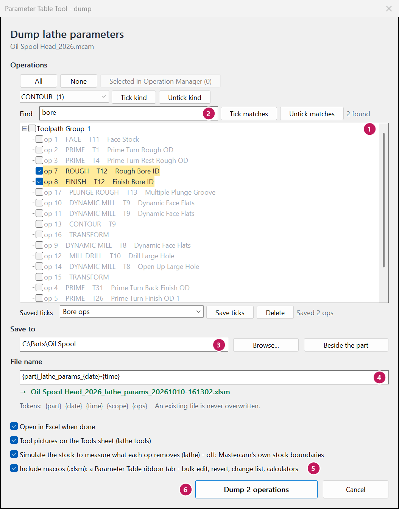
The file name
The name can hold these words in braces; the tool fills them in:
| Type | You get |
|---|---|
{part} | the part's file name, e.g. Oil Spool Head_2026 |
{date} {time} | today's date and the time, e.g. 20261009 155309 |
{scope} | all, or selected when you dump only some ops |
{ops} | how many ops, e.g. 18 |
If a file by that name is already there, the new one gets (2) on the end. Nothing is ever written over.
Worked example
You only want to work on the boring ops of the Oil Spool Head.
- In Find, type
bore. Two ops light up: 7 Rough Bore ID and 8 Finish Bore ID. - Click None, then Tick matches.
- Type
Bore opsunder Saved ticks and click Save ticks. - Click Dump 2 operations.
| Before | After | |
|---|---|---|
| Ops ticked | 18 (all) | 2 (ops 7 and 8) |
| Button | Dump 18 operations | Dump 2 operations |
| Saved ticks | (none) | Bore ops |
Dump the whole part when you can. The Summary page and the Tools page add up only the ops in the workbook, so a part-dump gives the true cycle time and flips.
What the messages mean
Dump a folder of parts
Mastercam: Parameter Table - dump a folder of parts
What this is for
This dumps every part in a folder, one after another. Each part gets its own workbook, the same as Dump to Excel makes. Then one more workbook puts all the parts side by side: the shop workbook.
Use it to see how your shop runs each insert across many parts: the speeds, the feeds, the depths of cut and how long an edge lasts. That is where shop standards start - not one part at a time, but the whole shop.
When to use it
- To find the parts that run an insert slower (or harder) than the rest of the shop.
- To start, or check, your shop's usual speed, feed and edge time for each insert.
- To compare the cycle times and insert costs of a family of parts.
- Not to edit a part. For that, use Dump to Excel on the one part.
Before you start
- Save your part. Mastercam has only one part open at a time. The tool closes your part, opens each part of the folder in turn, and opens your part again at the end. If your part has changes that are not saved, the tool stops and tells you.
- Nothing in the parts changes. Each part is opened, dumped and closed. It is not regenerated and never saved.
- An op that needs regenerating is dumped with its old toolpath. The Parts sheet counts
them (
ops_needing_regen). - Every op of every part is dumped. Op kinds the tool does not read yet are left out and named.
Steps
- Save your part. Then click Parameter Table - dump a folder of parts.
- Read the note under the title (1). It names your part: it is closed now and opened again at the end.
- Parts: type the folder, or click Browse... (2). Tick Include subfolders to take the folders inside it too. The green line (3) says how many parts it found.
- Save the workbooks: leave Beside each part, as a normal dump (4). Or pick All in one folder and browse to it.
- Options: leave them as they are. Simulate the stock (5) is off: it is slow, and with it off the tool uses Mastercam's own stock boundaries for the material removed.
- Click Dump (6) - it says how many parts, e.g. Dump 6 parts. A small window follows along: Part 3 of 6. To stop early, click Stop after this part. The parts done so far are kept.
- At the end a message says how many parts were dumped, and which were not and why. Click Yes to open the shop workbook in Excel.

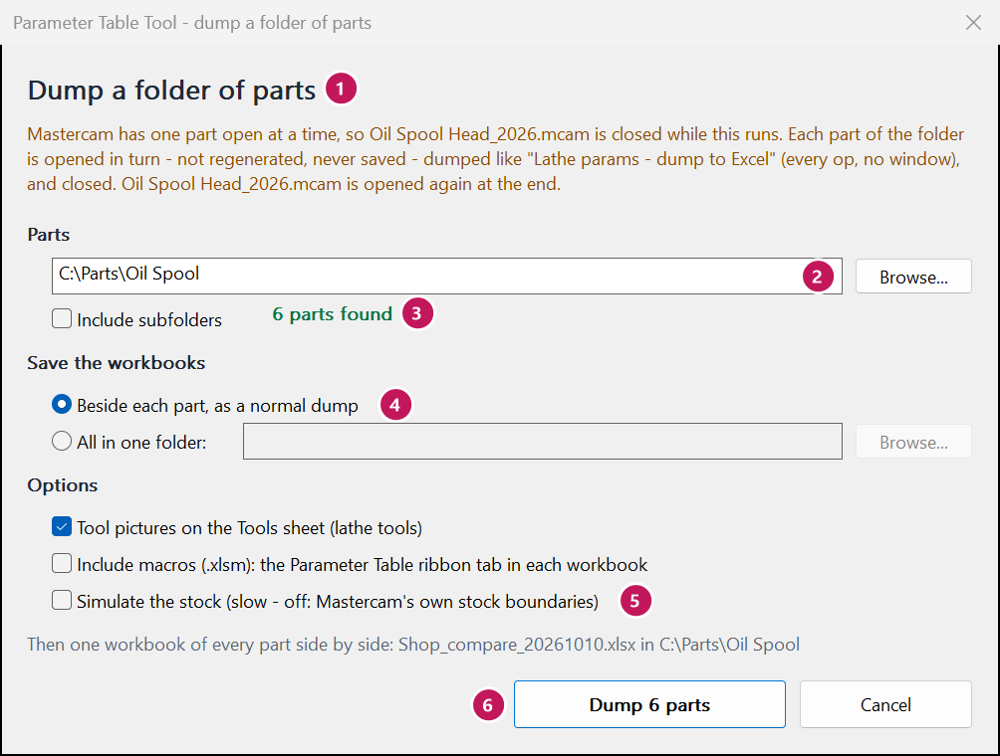
What is in the shop workbook
It is called Shop_compare_ and the date, e.g. Shop_compare_20261010.xlsx. It goes in the
folder of parts (or in the one folder you picked). It never writes over a file: a second one on the same day gets
(2) on the end. Every sheet has filter arrows on its headings.
| Sheet | One row per | What you read there |
|---|---|---|
| Parts | part | Dumped or not, and why. Ops, cycle time, cutting time, flips per part, and insert cost per part when the costs are typed on its Tools page. |
| Inserts | insert, kind of op and material | The parts and tools that use it. The lowest, median and highest SFM, feed per rev, depth of cut and edge time. |
| Ops | op of every part | Speed and feed as dumped, the same in inch units, depth, times, flips, edge time, MRR and air. |
| About | column | What each column means, and its units. |
- One set of units. So inch and metric parts can be compared, speeds are in SFM, feeds in inches per rev and depths in inches. A metric part's m/min, mm/rev and mm are changed over. The Ops sheet also keeps each op's own values.
- Edge time is how long one edge of a tool cuts before it is turned, in seconds: the tool's cutting time per part over its flips per part - the same way the Program check works it out.
- A log goes beside it, with the same name and
.log: one line for each thing done to each part. Read it when a part was not dumped.
Worked example
Your lathe cell has three parts in one folder: Bushing, Flange and Shaft. Each one finishes with a CNMG432 insert. You dump the folder. On the Inserts sheet, the CNMG432 FINISH row reads:
| insert | op_kind | n_ops | parts | sfm_min | sfm_median | sfm_max | feed_median | edge_time_median |
|---|---|---|---|---|---|---|---|---|
| CNMG432 | FINISH | 3 | 3 | 450 | 600 | 650 | 0.006 | 150 |
450 is far below the median. Filter the Ops sheet to CNMG432 to see which part:
| part | op | sfm | feed_ipr | edge_seconds |
|---|---|---|---|---|
| Bushing | 4 | 450 | 0.006 | 210 |
| Flange | 7 | 600 | 0.005 | 150 |
| Shaft | 3 | 650 | 0.007 | 120 |
- Bushing runs the insert at 450 SFM - 150 under the rest of the shop. Its edge lasts longest (3:30), so there is room to speed it up.
- Open Bushing in Mastercam and dump it. Use Speed & feed to try 600 SFM on op 4, and watch the cycle time.
- Shaft's edge lasts least (2:00) at the highest speed. Check it with the Program check.
The median is the middle value. One odd part does not pull it far, so it is a good starting point for a shop standard.
What the messages mean
Load the changes
Mastercam: Lathe params - load
What this is for
The load reads your saved workbook and puts the changed values back into the ops. First it shows a window with every change, op by op: the old value crossed out in red, the new value in green. Each change has a tick box. Nothing is written until you click Apply.
When to use it
When you are happy with your edits in Excel and have saved the workbook.
Steps
- Save the workbook in Excel (Ctrl+S). You can leave it open.
- In Mastercam, open the same part and click Lathe params - load.
- Pick the workbook. The file window starts on the one you dumped last for this part. Click Open.
- Read the top line: the whole part's cycle time and insert flips, before and after.
- Read the list. Each op shows its own time and flips, then each change. Untick anything you want to leave out. Unticking an op unticks all of its changes. The top line follows.
- Look at the Refused part, if there is one. Those rows are not written at all (see below).
- Click Apply (it says how many, e.g. Apply 4 changes), or Cancel to write nothing.
- Regenerate the changed ops (they are marked dirty), check them, then save the part.

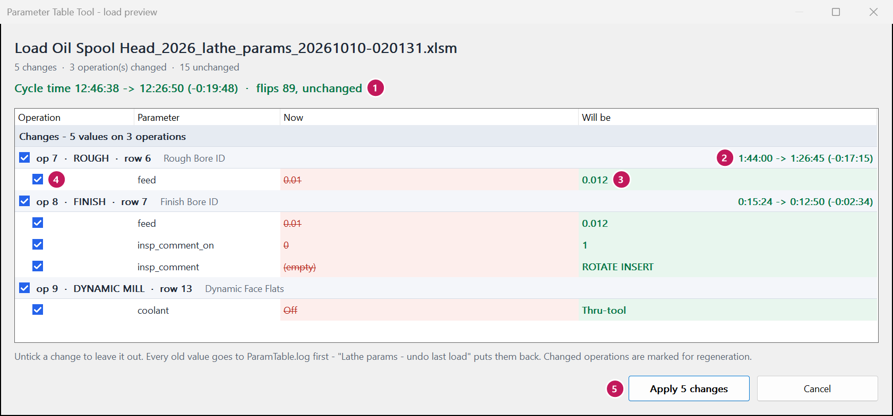
Some changes tick together. A feed and its feed_mode (per rev / per min) go together;
so do a speed and its CSS / RPM, and a value and the switch that turns it on. Half of a pair would make no sense.
Worked example
You changed the bore feeds (ops 7 and 8) and the facing speed (op 1). The preview shows:
| Operation | Parameter | Now | Will be |
|---|---|---|---|
| op 1 · FACE | speed | 200 | 250 |
| op 7 · ROUGH | feed | 0.01 | 0.012 |
| op 8 · FINISH | feed | 0.01 | 0.012 |
You decide to wait on the facing speed. Untick op 1. The top line drops back to the bore changes only. The button now reads Apply 2 changes. Click it; regenerate ops 7 and 8.
What the messages mean
A refused row is left out whole – half a row is a state nobody chose. The reason is beside it:
Every old value goes into ParamTable.log beside the part first. That is how
undo last load puts them back.
Undo a load
Mastercam: Lathe params - undo last load
What this is for
It takes the last load of this part back. The old values come from ParamTable.log, a file the load
writes beside the part before it changes anything. You see the same kind of preview window as the load, with tick boxes,
before anything is written.
This is the undo for the part in Mastercam. For an undo inside Excel, see Undo.
When to use it
After a load, when the result is not what you wanted: the backplot looks wrong, the program posts badly, or the operator says the new feed chatters. It is its own command so it is there later – long after the load window has closed.
Steps
- Open the part in Mastercam (the same saved part file the load went into).
- Click Lathe params - undo last load.
- Read the window. Restore lists each value it will put back. Changed since the load lists values you changed by hand after the load – those are left alone.
- Untick anything you want to keep as it is now.
- Click Restore (e.g. Restore 2 changes).
- Regenerate the restored ops, then save the part.

Worked example
You loaded feed 0.012 into ops 7 and 8. After the load you also changed op 8's feed by hand in Mastercam to 0.011. Now the bore chatters and you want the old feeds back.
| Op | Before the load | Now | Undo does | After undo |
|---|---|---|---|---|
| 7 feed | 0.01 | 0.012 | Restore | 0.01 |
| 8 feed | 0.01 | 0.011 | Changed since the load – left alone | 0.011 |
Run it a second time and it does nothing: the values are already back.
What the messages mean
What is in the workbook
What this is for
A map of the workbook the dump makes: which sheet is which, what the colours mean, and where the buttons are. The sheet tabs are along the bottom of the Excel window.
When to use it
The first time you open a dumped workbook, or when a sheet or colour puzzles you.
Steps
- The workbook opens on the Summary sheet: the part's totals.
- Click the Lathe params tab at the bottom: the main sheet, one row per op. This is where you edit.
- Click the Tools tab: one row per tool, with its picture and insert, and the inserts table under it.
- If you ticked Include macros, click the Parameter Table tab on Excel's ribbon (at the top) to see the tools below.
The sheets
| Sheet | What it holds | You type in it? |
|---|---|---|
| Summary | Cycle time, flips, material removed – as dumped and now. A batch quantity and insert cost. The longest ops. | Batch quantity only |
| Lathe params | One row per op: every setting the tool reads. | Yes – the white cells |
| Tools | One row per tool; an inserts table under it. | Insert names, edges, cost, edge life |
| Dumped (hidden) | A copy of every value as dumped. It is how changed cells light up, and how Back to the dump works. | Never |
| Changes | Made by List changes. | No |
| Scenarios | Made by Compare scenarios. | No |
| Program check | Made by Program check. | The Ignore column |
| Slowest ops | Made by Slowest ops. | No |
| Change report | Made by Change report. | The Why column |
The colours
| Looks like | Means |
|---|---|
| white | You can type here. |
| yellow | You changed this cell. It differs from the dump. |
| blue | A worked-out number (time, flips, MRR) that moved because of your edits. |
| grey | Read-only, or the setting does not apply to this kind of op. Excel will not take typing here. |
| blue line above and below a row | The op row your cursor is on (with macros), so you do not lose your place on a wide sheet. |
The Parameter Table tab (with macros)
Every window these open has a ? button that opens its page in this manual.
The .ptconfig file beside the part
What you type on the Tools page and the Summary (insert names, edges, cost, parts per edge, edge life, batch
quantity) is kept in a small file next to the part, called <part>.ptconfig. The next dump starts
with those values, so you type them once. Delete the file to start over.
Worked example
You type 0.012 over the feed of op 7 (it was 0.01).
| Cell | Before | After |
|---|---|---|
op 7 feed | 0.01 (white) | 0.012 (yellow) |
op 7 changes | 0 | 1 |
op 7 est_cycle_time | 1:44:00 | 1:26:45 (blue) |
| Summary: cycle time, Now | 12:46:38 | 12:29:23 |

changes count for the row.Summary page
Workbook: the Summary sheet (the first tab)
What this is for
The Summary is the whole part on one page. It shows the totals as dumped and now, with the change. It follows every edit you make, as you type. Under that: a batch, the longest ops, the tools that flip inserts most, the ops that cut the most air, and how many inserts a part uses.
When to use it
- Before you start: to see where the time goes.
- While you edit: to see the effect on the whole part.
- Before you load: to know what you will gain.
Steps
- Look at Part totals. As dumped is the program as it is in Mastercam. Now is with your edits. Change is the difference (minus = less).
- Type your batch quantity (how many parts in a run) in the box beside Batch quantity (type it in). The cycle time, flips and insert cost per batch follow.
- Type the edges and cost of each insert on the Tools page to get Insert cost per part and per batch.
- Look at Longest operations. These are where a change saves the most. Click an op number to jump to its row.
- Look at Insert flips by tool and Most air cutting for more ideas.

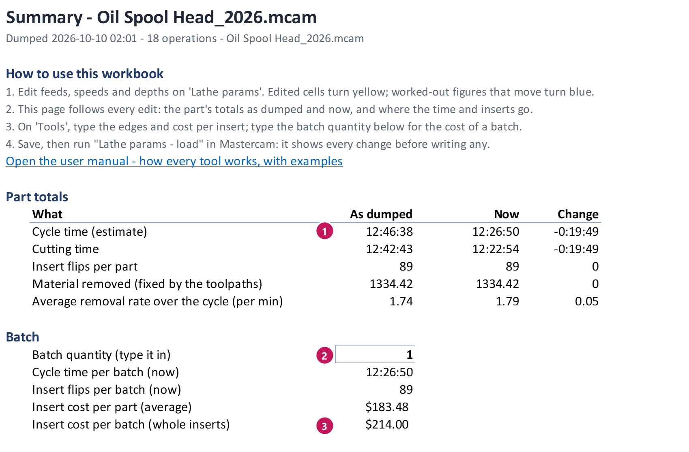

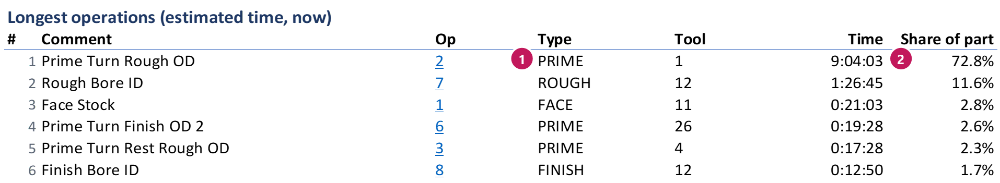
Worked example
Oil Spool Head, after raising the bore feeds (ops 7 and 8) to 0.012:
| What | As dumped | Now | Change |
|---|---|---|---|
| Cycle time (estimate) | 12:46:38 | 12:26:50 | -0:19:49 |
| Cutting time | 12:42:43 | 12:22:54 | -0:19:49 |
| Insert flips per part | 89 | 89 | 0 |
| Average removal rate (per min) | 1.74 | 1.79 | 0.05 |
The prime turning rough (op 2) is 72.8% of the part. That is where the next big saving is.
What the messages mean
The main sheet
Workbook: the Lathe params sheet
What this is for
This is where you edit. Each row is one op, in the same order as Mastercam's
Operation Manager. Row 1 has the group names
(Feeds and speeds, Coolant ...). Row 2 has the column names (feed, speed ...).
The first columns – op number, type, tool, comment – stay in view when you scroll right.
When to use it
Any time you change a setting. You can type straight into the cells, like any spreadsheet. The ribbon tools (Set, Scale ...) just make big changes quicker.
Steps
- Find the op's row. Scroll, or use Find op on the ribbon.
- Find the column. Hover over a column name in row 2 to read what it is. A group that is folded away shows only one column: click the small + above the column letters to open it. (With macros: Go to on the ribbon opens a group for you.)
- Type the new value and press Enter. The cell turns yellow. Click a cell with a
small arrow on its right to pick from a list (for example
per rev/per min). - Watch the row's numbers move:
est_cycle_time, flips and MRR follow your edit. See How the estimate works. - Save when you are done (Ctrl+S).
Rules that keep you safe
- An empty cell means “leave it alone” – never zero.
- Each cell checks what you type. A value Mastercam would not take is refused straight away, with a message saying what the cell takes. Click Retry or Cancel.
- Grey cells refuse typing. They are read-only (a time, a count) or the setting is not part of this kind of op.
- A feed is two cells: the number (
feed, always positive) and its unit (feed_mode: per rev or per min). A speed is the number (speed), CSS or RPM (speed_mode) and CW or CCW (spindle_dir). - Sorting and filtering are fine. The load finds each row by its op number, not by where it is.
- X values are a radius in the travel columns (double them for diameter). A few angles are in radians – the tooltip says so.
Worked example
Op 17 (Multiple Plunge Groove) plunges at 0.0025 inch per rev. You want 0.003.
- Find op 17's row. Click its
feedcell (Feeds and speeds group). - Type
0.003, press Enter.
| op 17 | Before | After |
|---|---|---|
feed | 0.0025 | 0.003 |
feed_mode | per rev | per rev |
changes | 0 | 1 |
est_cycle_time | 0:09:00 | shorter (blue) |
If you had typed -0.003 by mistake, the cell would refuse it: a feed is never below 0 here.
changes count.What the messages mean
Tools page
Workbook: the Tools sheet
What this is for
One row per tool: its picture, which ops use it, its insert, how many insert flips a part takes, and how long it cuts. Under the tools is the inserts table: one row per insert, with its edges and cost. From those, the workbook works out how many inserts a part uses and what they cost. In the main sheet, click a tool number to jump here.
When to use it
- To see which tools eat inserts.
- To get the insert cost per part and per batch (type edges and cost once – they are kept for next time).
- When the insert name the tool guessed is wrong.
Steps
- Check each tool's insert (the Insert column). The tool works it out from
the tool's shape, e.g.
C 80° r0.031. If it is wrong, type over it. Tools with the same insert name are added up together below. - Look at the flips: Flips / part, Cut time / part, Longest between flips, and Inspection (what its ops stop on).
- Edge life (fallback): only for ops that stop for inspection with no time of their own. Type the cut
time one edge lasts, as minutes:seconds (
8:00). Greyed out where no op uses it. - Insert size (IC) and Entering angle (at the right end of each tool row): the insert's size across its inscribed circle (a round insert's diameter), and the holder's entering angle – read from its ISO code (PCLNL: an L-style holder, 95°; 90° = square shoulder). The chip thinning calculator uses them. Type over a wrong one; it is kept. Leave the angle blank for round, grooving and PrimeTurning tools.
- In the inserts table, type the edges per insert (a CNMG: 4; a VNMG: 4; a VCMT: 2; a round: about 8). The guess counts one side only – type over it for a double-sided insert.
- Type the cost per insert. Inserts / part and Insert cost / part fill in. The Summary page takes them to a batch.
- Parts per edge – only for an insert that lasts more than one part (the toolpath never flips it). Type how many parts one edge makes. It is greyed out where the toolpath already flips the edge every part.
- Usual edge time (the last column of the inserts table): how long one edge of this insert
usually cuts in your shop before it is turned, as minutes:seconds (
12:00). The Program check warns about a tool whose edge runs more than 25% longer. Leave it blank and the check compares the tools in this program with each other instead.

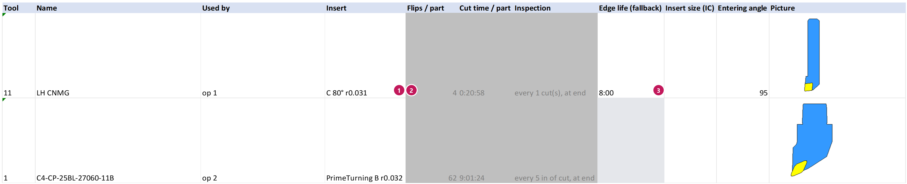

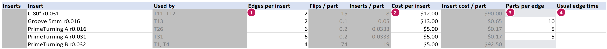
Worked example
On the Oil Spool Head, tools T11 and T12 both carry a C 80° r0.031 insert. Together they flip
15 edges per part. The guess says 2 edges, but it is a CNMG – double-sided, 4 edges. Inserts cost $12.
| C 80° r0.031 | Before | After |
|---|---|---|
| Edges per insert | 2 | 4 |
| Flips / part | 15 | 15 |
| Inserts / part | 8 | 4 |
| Cost per insert | (blank) | $12.00 |
| Insert cost / part | (blank) | $45.00 |
15 flips ÷ 4 edges = 3.75 inserts, shown as 4 whole inserts. The cost uses 3.75 × $12 = $45.00. Next dump, the 4 and the $12 are already there (kept in the part's .ptconfig file).
What the messages mean
Find an op
Ribbon: Parameter Table tab › Find
What this is for
A part can have dozens of ops and hundreds of columns. The Find group gets you to the right row and the right columns fast – and can hide the rows you do not need right now.
When to use it
- “Where is op 23?” – or “where are all the ops of tool 12?”
- “Where are the coolant columns?”
- “Which ops did I change?”
Steps
Find an op by number, tool or words
- Click in the Find op box on the ribbon.
- Type one of these, then press Enter:
- an op number:
23 - a T and a tool number:
T12 - words from the comment or the type:
bore,groove
- an op number:
- The sheet jumps to the first op that matches. The status bar (bottom of Excel) names it.
- Click Next match for the next one. After the last, it starts again at the top.
Go to a column group
- Select a cell in the op rows you care about (or just one).
- Click Go to and pick a group, e.g. Coolant.
- That group opens and the others fold away, so the sheet is easy to read. The cursor lands in that group, on the same rows.
- To open every group again: Go to › All columns (open every group).
Show only some ops
- Changed ops – only the ops you have changed.
- This tool's ops – click a cell in an op's row first; shows only the ops with the same tool.
- Slowest ops – only the ops that take most of the time.
- Show all – every op again.
Hidden rows are not lost. The tools that work on “selected cells” skip hidden rows, so you can show only one tool's ops, select a whole column, and change just those.
The row mark. The op row your cursor is on gets a blue line above and below (and its first columns a light blue tint). On a wide sheet it stops you reading across into the wrong row.

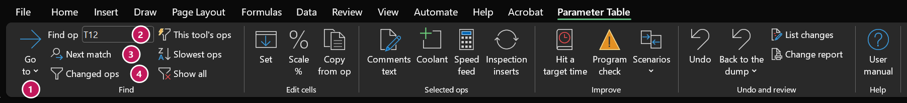
Worked example
You want every op of tool 12 on the Oil Spool Head, with their feeds.
- Type
T12in Find op, press Enter: the cursor goes to op 7. - Click This tool's ops.
- Click Go to › Feeds and speeds.
| Before | After | |
|---|---|---|
| Rows showing | 18 ops | 2 ops (7 and 8) |
| Column groups open | all | Identity and Feeds and speeds |
| Cursor | op 1 | op 7, feed |
Click Show all and Go to › All columns when you are done.
What the messages mean
Slowest ops
Ribbon: Parameter Table tab › Find › Slowest ops
What this is for
On most parts, a few ops take most of the time. Slowest ops shows only the ops that make up 80% of the cycle time and hides the rest. It also makes a Slowest ops sheet that ranks them, longest first. That is where a change saves the most.
When to use it
First thing, whenever the goal is “make it faster”. Saving 10% on an op that is 70% of the part beats saving 50% on an op that is 1% of it.
Steps
- Click Slowest ops.
- The Lathe params sheet now shows only the slow ops (in their usual order – the rows
are hidden, not moved). The status bar at the bottom says how many, e.g.
2 of 18 ops make 80% of the cycle time
. - The Slowest ops sheet lists them longest first: Time, Share of the part, Running share (adding up), Cut time and Air time. Click an op to go to its row.
- Change them (type, Scale %, or Hit a target time).
- Click Show all on the ribbon to see every op again.

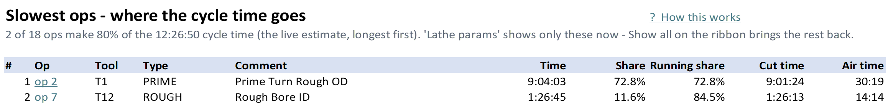
Worked example
The Oil Spool Head, after the bore feeds went to 0.012, runs 12:26:50. Slowest ops shows:
| Op | Time | Share | Running share | Air time |
|---|---|---|---|---|
| 2 Prime Turn Rough OD (T1) | 9:04:03 | 72.8% | 72.8% | 30:19 |
| 7 Rough Bore ID (T12) | 1:26:45 | 11.6% | 84.5% | 14:14 |
Two ops out of 18 are 84.5% of the time. Everything else together is 15.5%. Start with op 2 – and look at its half hour of air cutting.
What the messages mean
Set
Ribbon: Parameter Table tab › Edit cells › Set
What this is for
Puts one value into every cell you selected. Before anything is written, the window tells you how many cells will change and which ones are refused (read-only, not for that kind of op, or outside its limits).
When to use it
- The same feed, depth or stock to leave on many ops.
- The same choice on many ops:
per rev,CSS, a yes/no switch.
For coolant, use Coolant (Set on coolant cells opens it for you). For a percent up or down, use Scale %.
Steps
- Select the cells on the Lathe params sheet. To pick cells that are not next to each other, hold Ctrl while you click. To pick a whole column of ops, click the first cell, hold Shift, click the last.
- Click Set on the ribbon.
- Type the value (or pick it from the list). The list shows what is in the cells now, or the cell's own choices.
- Read the line under it: how many cells will change, how many already have that value, how many are refused. The list below shows each cell, old → new.
- Click OK. The cells turn yellow. The status bar (bottom of Excel) says what was done.

Hidden rows are skipped. Use This tool's ops or Changed ops first, then select the whole column – only the rows you can see are set.
Worked example
Set the feed of ops 1, 7 and 8 to 0.012 per rev.
- Click op 1's
feedcell. Hold Ctrl and click op 7's and op 8's. - Click Set, type
0.012. - The window says
3 cell(s) will change.
Click OK.
| Op | feed before | feed after |
|---|---|---|
| 1 Face Stock | 0.01 | 0.012 |
| 7 Rough Bore ID | 0.01 | 0.012 |
| 8 Finish Bore ID | 0.01 | 0.012 |
Changed your mind? Press Ctrl+Z (or Undo) – all three go back at once.
What the messages mean
Scale %
Ribbon: Parameter Table tab › Edit cells › Scale %
What this is for
Makes every selected number bigger or smaller by the same percent – like turning the feed override knob, but saved in the program. Each cell keeps its own value: 0.010 and 0.020 at +10% become 0.011 and 0.022.
When to use it
- “These ops can all go 10% faster.”
- “Back the speeds off 15% on this tough material.”
To reach a set cycle time instead, use Hit a target time.
Steps
- Select the number cells to change (e.g. the
feedof several ops). Text cells and worked-out cells are skipped. - Click Scale %.
- Type the change, with its sign:
+10%means 10% more,-10%means 10% less. (Or pick one from the list.) A bare10%is refused – the window asks which way. - Read the preview: how many cells change, and each cell, old → new. Cells that would go past their limits are refused and listed.
- Click OK. Ctrl+Z takes it back.

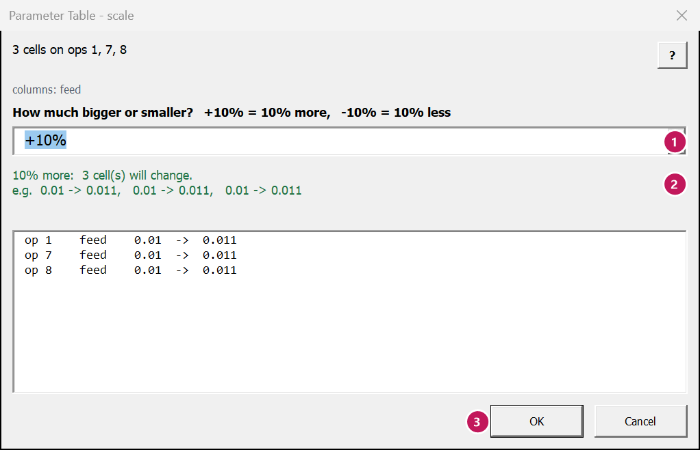
Worked example
Raise the feeds of the facing op and the two bore ops by 10%. Select the feed cells of ops 1, 7 and 8
(hold Ctrl), click Scale %, type +10%, click OK.
| Op | feed before | +10% |
|---|---|---|
| 1 Face Stock | 0.01 | 0.011 |
| 7 Rough Bore ID | 0.01 | 0.011 |
| 8 Finish Bore ID | 0.01 | 0.011 |
The estimate on each row drops by about 9% of its cutting time (time goes down as feed goes up: 1 ÷ 1.10 = 0.91).
What the messages mean
Copy from op
Ribbon: Parameter Table tab › Edit cells › Copy from op
What this is for
Makes ops match. You pick the columns (by selecting cells in them), pick the op to copy from, and the values go into the other ops you selected – or into every op that uses the same tool.
When to use it
- One op runs well. You want the same feed and speed on a similar op.
- You tuned one op of a tool and want all of that tool's ops the same.
Steps
- Click the op to copy from – in a column to copy – so the cursor is on it.
- Select the cells to copy (for example
feedandspeed). Hold Ctrl to add the same cells in the rows to copy into. - Click Copy from op.
- Copy from: starts on the op the cursor is on. Pick another in the list if you like (it shows each op's number, type and comment).
- Into: The selected rows, or Every other op of tool ... (every op with the same tool as the op you copy from).
- Read the preview: how many cells change, and each cell, old → new.
- Click OK. Ctrl+Z takes it back.
Units are checked. A feed is not copied into a row whose feed is in other units
(per rev / per min), and a speed not into a row with the other of CSS / RPM – those cells
are refused and listed. Copy the unit column too (feed_mode, speed_mode) and they go across
together. A feed of 0.012 per minute would be a crawl.

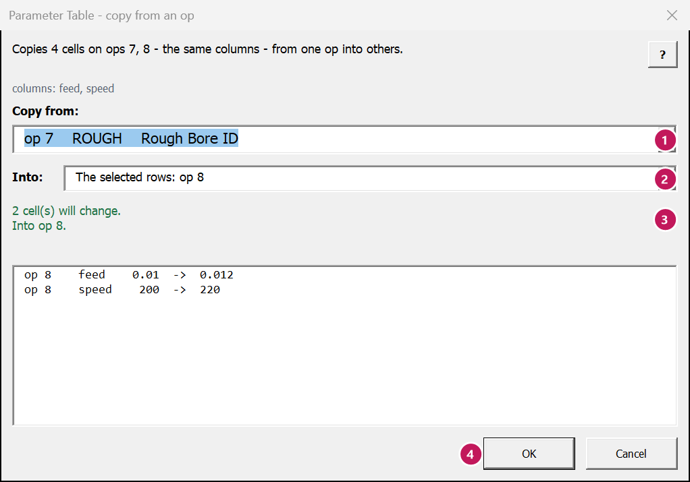
Worked example
Op 7 (Rough Bore ID) now runs well at 0.012 per rev and 220 SFM. Make op 8 (Finish Bore ID, same tool T12) the same.
- Click op 7's
feedcell, drag across to itsspeedcell. Hold Ctrl and do the same on op 8. - Click Copy from op. Copy from shows op 7, Into
shows The selected rows: op 8. The window says
2 cell(s) will change.
- Click OK.
| op 8 | Before | After |
|---|---|---|
feed | 0.01 | 0.012 |
speed | 200 | 220 |
feed_mode, speed_mode | per rev, CSS | per rev, CSS (same – no warning) |
A finish pass often wants a lighter feed than the rough. Copy what makes sense, not everything.
What the messages mean
Comments & text
Ribbon: Parameter Table tab › Selected ops › Comments & text
What this is for
A roomy window for the three kinds of text an op has:
- Op comment – the name the Operation Manager shows (
comment, up to 119 characters). - Inspection comment – the message at a tool inspection stop
(
insp_comment), e.g.ROTATE INSERT. Its limit is the cell's own (often 49 characters). - Manual text – the text of a manual entry op (
manual_text, up to 3,111 characters). Only for manual entry ops, one op at a time.
It counts the characters as you type, against each one's limit. With several ops selected, what you type goes on all of them.
When to use it
- To rename ops so the setup sheet and the operator make sense of them.
- To tell the operator what to do at an inspection stop (rotate the insert, check a size).
- To edit a long manual entry without squinting at a cell.
Steps
- Select the ops – any cell in their rows. (Or double-click a
comment,insp_commentormanual_textcell: the window opens on that tab.) - Click Comments & text. The line at the top says which ops it is on.
- Pick the tab: Op comment, Inspection comment or Manual text. A tab the ops do not have is greyed out.
- Type the text. The count under the box shows the characters against the limit. If the ops have
different text now, it says
Mixed - these 2 ops have different comments now
; what you type goes on all of them. - On the Inspection comment tab you can click a common comment instead: ROTATE INSERT, CHANGE INSERT, INDEX INSERT, CHECK INSERT. If a stop's comment is switched off, tick Also switch the comment on at the stop.
- Manual text: pick the op in the Op list (one op at a time). Ctrl+Enter applies.
- Click Apply. The cells turn yellow. Ctrl+Z takes the whole Apply back.
The window stays open beside the sheet. Click other ops and it follows them – unless you have typed something you have not applied yet (then it waits: Apply, or Revert to follow the sheet again). Close or Esc throws away typing you have not applied. < Prev and Next > move to the op above or below. The ? button opens this page.
The words in an inspection comment matter. A stop whose comment says
ROTATE, FLIP, CHANGE or INDEX is counted as an
insert flip – a new edge. CHECK INSERT is only a look, not a flip.
Change CHECK INSERT to ROTATE INSERT and the flips per part go up.

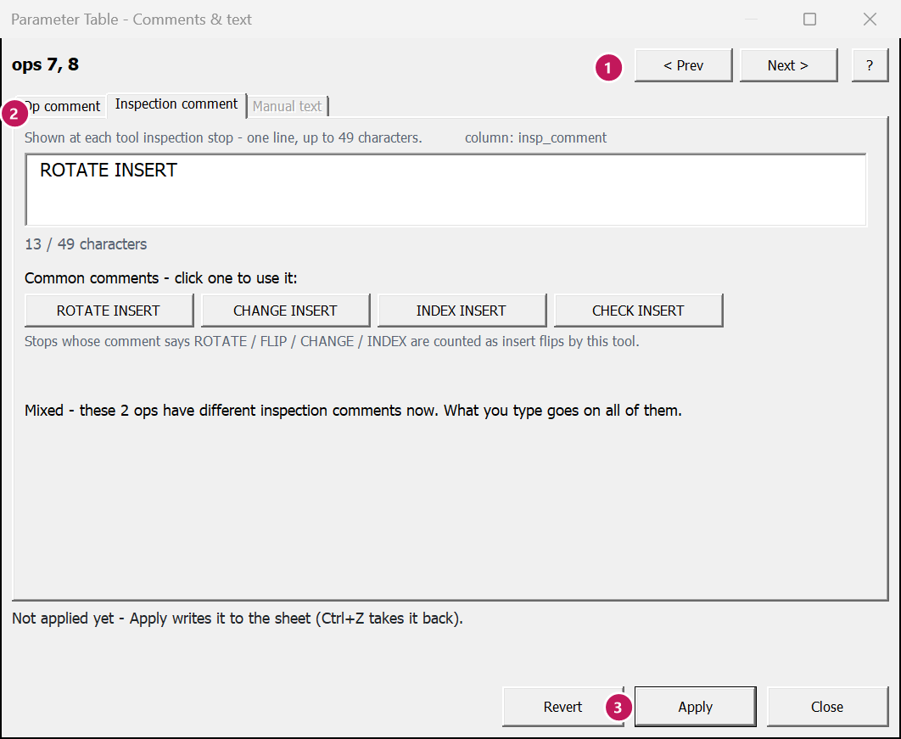
Worked example
Say your rough bore and finish bore (ops 7 and 8, tool T12) stop for inspection with the comment
CHECK INSERT. In your shop the operator always turns the insert at that stop. Say so in the comment, and the
flips will be counted.
- Click a cell in op 7's row, hold Ctrl, click a cell in op 8's row.
- Click Comments & text, then the Inspection comment tab.
- Click ROTATE INSERT, then Apply.
| Op | insp_comment before | insp_comment after | Stops counted as flips (after load and regenerate) |
|---|---|---|---|
| 7 Rough Bore ID | CHECK INSERT | ROTATE INSERT | no → yes |
| 8 Finish Bore ID | CHECK INSERT | ROTATE INSERT | no → yes |
After you load and regenerate, the NC code carries the message at each stop. If the stop's comment was switched off, tick Also switch the comment on at the stop before Apply.
What the messages mean
Coolant
Ribbon: Parameter Table tab › Selected ops › Coolant
What this is for
Shows the coolant of the ops you selected and sets it for all of them at once. It works for both ways a Mastercam machine can be set up for coolant:
- One setting per op (“V9” coolant):
Off,Flood,MistorThru-tool. Columncoolant. - Before / with / after the move (“X-style” coolant), using your machine's own coolant names.
Columns
coolant_before,coolant_with,coolant_after. Each can hold more than one coolant.
Each op follows its own machine, so one part can have both kinds.
When to use it
- A program came over with coolant off on cutting ops.
- You want thru-tool on all the drills, or mist instead of flood on a whole group.
Steps
- Select the ops – any cell in their rows. (Or select coolant cells and click Set: it opens this window too.)
- Click Coolant. The sheet jumps to the coolant columns, so you see what is set now.
- Read what is set now. If the ops differ, it says how, e.g.
Mixed: Flood x2, Off x1
. - Pick the coolant.
- One setting (V9): pick Off, Flood, Mist or Thru-tool for all of these ops.
- Before / with / after the move (X-style): a grid of your machine's coolants. Tick the ones to turn on. A grey box means some of the ops have it and some do not – leave it grey and each op keeps its own.
- Click Apply. Only what you changed is written. Ops it could not set are listed, with the reason.
The window stays open beside the sheet and follows the ops you click (unless you have changed something you have not applied). Ctrl+Z takes back the whole Apply.

Worked example
On the Oil Spool Head, the prime turning ops (2, 3, 4, 5, 6) run with coolant Off. The others run
Flood. You want flood on the two roughs, ops 2 and 3.
- Select a cell in op 2's row and op 3's row.
- Click Coolant. It shows
Now: Off
(both the same). - Pick Flood, click Apply.
| Op | coolant before | coolant after |
|---|---|---|
| 2 Prime Turn Rough OD | Off | Flood |
| 3 Prime Turn Rest Rough OD | Off | Flood |
Coolant does not change the cycle time estimate. It is listed in the load preview like any other change.
What the messages mean
Speed & feed
Ribbon: Parameter Table tab › Selected ops › Speed & feed
What this is for
A calculator that fills itself in from the op you are on. It has two tabs:
- Speed & feed – SFM and RPM at a diameter, and feed per rev and per minute. Type in any box; the others follow. It warns when the RPM would go past the op's max RPM.
- Chip thinning – how thick the chip really is with a round insert or an insert with a lead angle, and the feed to program for the chip you want. It can write that feed back to the op.
When to use it
- The insert box says 650 SFM and you want to know the RPM at your diameter.
- You need the feed in inches per minute for a per-minute op.
- A round insert or a 45° lead insert is rubbing instead of cutting – the chip is thinner than the feed.
Steps
Speed & feed tab
- Click a cell in the op's row, then click Speed & feed. (Or pick the op in the window's op list, or use < / > for the op above or below.)
- The boxes fill in from the op, in the op's own units (inch or mm): Diameter (the op's average
cutting diameter,
cut_dia, when it is known), Surface speed (SFM), Spindle speed (RPM), Feed per rev, Feed per minute. - Type a new value in any box. The others work it out: RPM = SFM × 3.82 ÷ diameter (inch), feed per minute = feed per rev × RPM.
- Watch the note under the boxes: above the op's max RPM (
max_ss) the spindle stops at the max, so the real surface speed is lower – and the feed per minute is worked out at the max RPM. - To use a new feed, click the button under the boxes – it says what it will do, e.g. Set this op's feed: 0.01 -> 0.012. The cell turns yellow; Ctrl+Z takes it back.
Chip thinning tab
- Click the Chip thinning tab. The line at the top says the tool and its insert.
- Pick the insert kind if it is not right: a round insert (type its size and the depth of cut) or a straight edge (type the holder's Entering angle – or the US Lead angle, which is 90° minus it; type either one).
- Read the chip at today's feed: real chip = feed × sin(entering angle). A round insert's angle comes from its size and the depth: the shallower the cut, the thinner the chip.
- Type the chip thickness you want. It shows the feed per rev to program.
- Click Set this op's feed to write it (as a per-minute feed if the op runs per minute).
The insert size and entering angle come from the Tools page columns Insert size (IC) and Entering angle. The angle is read from the holder's ISO code (PCLNL: an L-style holder, 95°). Type over either one there if it is wrong – it is remembered. PrimeTurning, grooving, mill and drill ops get a short explanation instead of a guess.
The window stays open beside the sheet and follows the op you click.

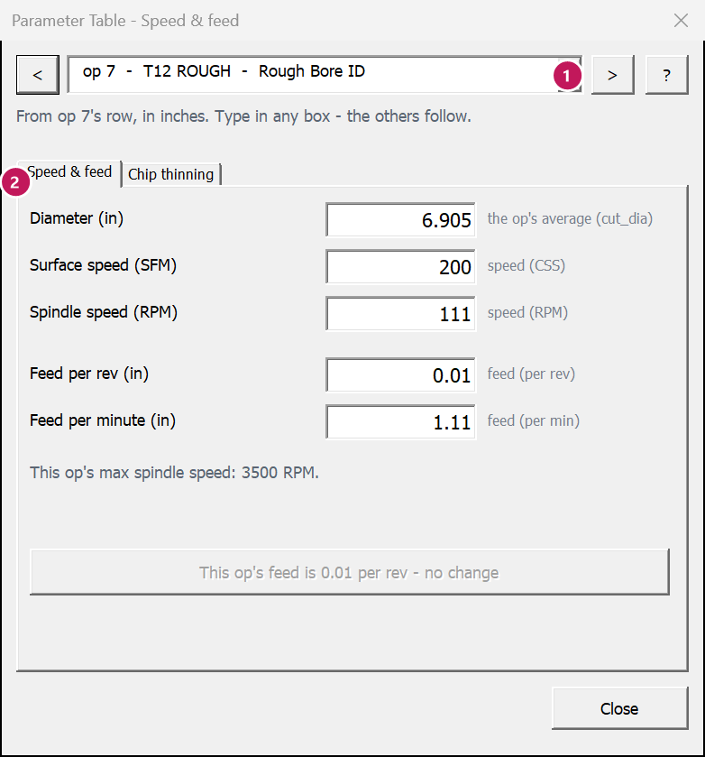

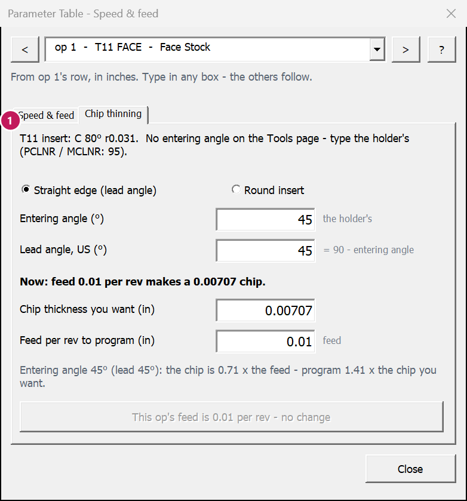
Worked example
Speed and feed
Op 7 (Rough Bore ID) cuts at about 6.905″ diameter, 200 SFM, 0.010 per rev.
| Before | You type 260 SFM | |
|---|---|---|
| Surface speed (SFM) | 200 | 260 |
| RPM at 6.905″ | 110.6 | 143.8 |
| Feed per rev | 0.010 | 0.010 |
| Feed per minute | 1.11 | 1.44 |
Chip thinning
A 0.5″ round insert cutting 0.050″ deep. Its entering angle works out to about 37° (sin = 0.6), so the chip is only 60% of the feed.
| Programmed now | For a 0.006″ chip | |
|---|---|---|
| Feed per rev | 0.006 | 0.010 |
| Real chip | 0.0036 | 0.006 |
A 45° lead insert is the same idea: sin 45° = 0.71, so a 0.010 feed gives a 0.0071 chip.
What the messages mean
Inspection & inserts
Ribbon: Parameter Table tab › Selected ops › Inspection & inserts
What this is for
Shows, for each tool, how often it stops to turn its insert and how much of each edge gets used. Often the last edge
of a part is thrown away half used. The window works out an edge time (insp_time) that
splits the tool's cutting evenly over its edges – fewer flips, no wasted edge – and writes it to every op of
the tool.
When to use it
- Insert cost per part is high (see the Summary).
- A tool flips one more time per part than it needs to.
- After you changed feeds or speeds – the cutting time changed, so the best edge time did too.
Steps
- Select the ops of the tools to look at (any cell in their rows), then click Inspection & inserts. (Tools: can also show every tool on the sheet.)
- Pick the goal: Same flips - use every edge evenly (the start), One flip fewer per part, or One flip more per part.
- Read one line per tool: Insert, Flips / part, Edge time (how long each edge cuts now), Last edge (how much of that the last edge in a part gets to cut), New edge time, New flips and a Note. Click a tool to read its whole note.
- Tick the tools to change. Check the note:
Edge runs 0:05 longer than now - check the insert can take it
means each edge would cut longer. - Click Apply. The new edge time goes into
insp_timeon every op of each ticked tool that times its stops (yellow). The flips on the sheet and the Summary follow. The goal goes back to Same flips.
“Change them in Mastercam.” Some tools stop for another reason – after a
number of cuts, by distance, or at the end of the op. A new edge time does not move those stops, so the tool cannot be
ticked. Its note says why, e.g. Flips come from stops in the toolpath (every 5 in of cut) - change them in
Mastercam.
Change the op's Tool inspection settings in Mastercam instead.

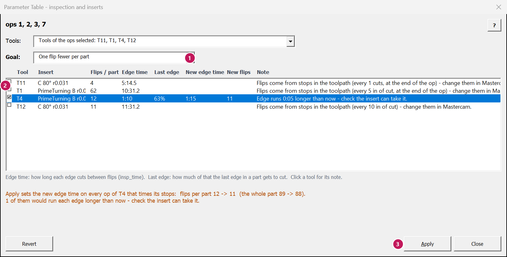
Worked example
On the Oil Spool Head, tool T4 (the PrimeTurning rest rough, op 3) turns its insert every 1:10 of cutting – 12 flips per part – and the last edge of a part cuts only 63% of that. Goal: One flip fewer per part.
| T4 | Now | After Apply |
|---|---|---|
Edge time (insp_time on op 3) | 1:10 | 1:15 |
| Flips per part | 12 | 11 |
| Whole part, flips per part | 89 | 88 |
| Note | Edge runs 0:05 longer than now – check the insert can take it. | |
Each edge cuts 5 seconds longer, and every part saves one edge. Tools T11, T1 and T12 cannot be ticked: their flips come from stops in the toolpath (every so many cuts, every 5 or 10 in of cut).
If the new edge time is much longer than what the insert really lasts, do not use it – look at the feeds, or a tougher grade, instead.
What the messages mean
Hit a target time
Ribbon: Parameter Table tab › Improve › Hit a target time
What this is for
You say how long some ops should take. The tool finds one factor for their feeds that gets there – each feed kept inside its own limits – and shows every op before and after: time, flips and MRR. Nothing is written until you click Apply.
When to use it
- A quote or a schedule needs the part (or a tool's ops) under a certain time.
- “Take 10% off this tool's time” – and you want to see what that does to the inserts first.
Steps
- Select the ops (any cell in their rows), or click a cell in one op of a tool.
- Click Hit a target time. The window opens beside the sheet.
- Ops: Selected rows, or Every op of tool ... (the tool of the row you are on).
- Target: type the time you want for those ops, like
12:30(minutes:seconds) or1:02:00(hours:minutes:seconds) – or a change:-10%for 10% less time,+10%for 10% more. Always type the sign: a bare10%is refused withsay which way
. - Options: Main cutting feed only is ticked to start (plunge, retract and back feeds stay as they are). Tick Speeds too to change speeds by the same amount.
- Press Enter or click Preview. Read each op: time, flips and MRR before and after, and the feed change. Enter only previews – it never writes.
- Click Apply to write it. Ctrl+Z takes it all back.
Only the cutting part of the time can change. Rapids, tool changes and dwells stay the same, so a very short target may not be reachable. The window says how close it gets.
Speeds too: the flips column then gets a * and a note. Flips are counted from cut time, so a faster speed looks like fewer flips – but a faster speed wears the edge sooner. Check the edge time with Inspection & inserts.

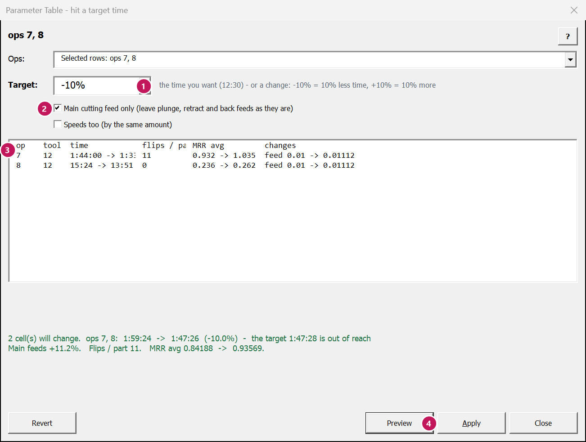
Worked example
The bore ops 7 and 8 take 1:59:24 together. The cell lead wants 10% off.
- Select a cell in op 7's row and op 8's row. Click Hit a target time.
- Type
-10%, press Enter. The main feeds go up 11.2%. - Read the preview, then click Apply.
| Op | feed | time before | time after |
|---|---|---|---|
| 7 Rough Bore ID | 0.01 → 0.01112 | 1:44:00 | 1:33:35 |
| 8 Finish Bore ID | 0.01 → 0.01112 | 0:15:24 | 0:13:51 |
| Both | 1:59:24 | 1:47:26 (-10.0%) |
Flips per part stay at 11 for the tool. Then check the insert: is the new feed inside the maker's range for that insert and that depth? If not, the time is a wish, not a plan.
What the messages mean
Program check
Ribbon: Parameter Table tab › Improve › Program check
What this is for
A second pair of eyes. It looks over every op and makes a Program check sheet of findings. Each finding says why it matters, how to fix it, and links to the op. Look at findings are worth a look before the program runs; FYI ones are just good to know. It changes nothing.
When to use it
- Before a program goes to the floor for the first time.
- After you edited a lot of ops.
- When you take over a program someone else wrote.
Steps
- Click Program check. The Program check sheet opens. The top lines say how many findings there are: so many to look at, so many FYI.
- Read the Look at findings first (they are at the top, most useful first). Each line has the Op, the Tool, What was found, Why it matters and How to fix.
- Click the op link to go to that op's row. Fix it there (or in Mastercam).
- If a finding is fine as it is (you meant it), set its Ignore cell to
yes. It stays ignored on the next check – and after the next dump too (it is kept in the part's .ptconfig file). Ignored findings show greyed at the bottom. - Run the check again after your fixes. It makes the sheet new each time and changes nothing on your other sheets.
What it looks for
| Finding | Kind | When |
|---|---|---|
| An edge runs much longer than usual (the main check) | Look at | A tool's edge time (its cut time per part ÷ flips per part) is more than 1.25 × the insert's Usual edge time that you type in the inserts table. With none typed: more than 1.5 × the other tools carrying the same insert in this program (their middle value) and at least 2 minutes longer. |
| Ops needing regeneration | Look at | needs_regen is yes: the toolpath, and its times, are out of date. |
| A feed that looks like the wrong unit | Look at | Per minute but under 1 in (25 mm), or per rev but over 0.1 in (2.5 mm). |
| CSS with no max RPM | Look at | Near the center, CSS asks for a huge RPM. Set a max RPM. |
| Lots of air cutting | Look at | Over 30% of an op's cut time in air, and over 1 minute. |
| The same tool at different speeds or feeds | FYI | Same tool and kind of op, speeds or feeds more than 10% apart. |
| Extra tool changes | FYI | One tool put in more than once in a toolpath group. |
| Coolant off on a cutting op | FYI | Usually forgotten. Dry on purpose? Ignore it. |
| Ops with no comment | FYI | The setup sheet and the operator see a blank name. |
Two things it does not do: it never flags tool inspection being off by itself (plenty of ops need no stops), and the words in an inspection comment do not decide what it counts as a flip. For a tool that never flips, its edge time is its cut time per part × the parts per edge you typed.

Worked example
On the Oil Spool Head the check finds 19 things: 3 to look at, 16 FYI. Two of them:
| Severity | Op | What was found | How to fix | Ignore |
|---|---|---|---|---|
| Look at | ops 7, 8 (T12) | T12 cuts about 9:00 on each edge – T11, the other C 80° r0.031 tool in this program, runs 5:15. | Turn the insert sooner on T12: insp_time about 5:15 (Inspection &
inserts on the ribbon) – or, if its edge really lasts, type the usual edge time for that insert on Tools. | |
| FYI | op 2 (T1) | op 2 cuts with no coolant on (coolant: Off). | Turn the coolant on for op 2 – or Ignore this if it runs dry on purpose. | yes |
The PrimeTurning rough runs dry on purpose, so its coolant finding is set to yes in Ignore. On the next
check it moves to the bottom, greyed. The T12 finding stays until you fix it – or type a
Usual edge time of 9:00 or more for the insert, if 9:00 is normal in your shop.
What the messages mean
Scenarios
Ribbon: Parameter Table tab › Improve › Scenarios
What this is for
A scenario is your set of edits, saved under a name inside the workbook. Save one idea, try another, then compare them side by side: cycle time, cutting time, flips and MRR for each, and every parameter each one changes.
When to use it
- “Faster feeds or faster speeds – which saves more?”
- You want to keep a set of edits to come back to, without loading it yet.
- You want to show the boss two options.
Steps
- Make your first set of edits on the sheet.
- Scenarios › Save the changes as a scenario. Type a name, click OK.
- Put the sheet back (Back to the dump › Everything) and make the second set of edits. Save it under another name.
- Scenarios › Compare scenarios. A Scenarios sheet opens with the totals and every changed parameter, side by side.
- To go on with one: Scenarios › Restore a scenario. The sheet goes back to the dump, then that scenario's values go in. Edits on the sheet that were not saved are kept first, as a scenario named with the date and time, e.g. (before restore 2026-10-09 22:40) – nothing is lost.
- Delete a scenario removes one you no longer want (the sheet is not changed).


Worked example
Two ideas for the Oil Spool Head: faster bore feeds (ops 7 and 8 at 0.012), or a faster facing speed (op 1 at 250 SFM).
| Scenario | Cells changed | Cycle time | vs the dump | Flips / part |
|---|---|---|---|---|
| As dumped | 0 | 12:46:38 | +0:00 | 89 |
| Bore feed 0.012 | 2 | 12:26:50 | -19:49 (-2.6%) | 89 |
| Face 250 SFM | 1 | 12:42:26 | -4:12 (-0.5%) | 89 |
The bore feeds save about five times more. Restore Bore feed 0.012, save, and load it.
What the messages mean
Undo
Ribbon: Parameter Table tab › Undo and review › Undo / Back to the dump
What this is for
Two ways back in Excel:
- Undo (or Ctrl+Z) takes back the last Parameter Table command – a whole Set, Scale, Copy or Apply at once. Press it again to go further back, up to 20 commands.
- Back to the dump puts cells back to the values they had when the sheet was dumped: the Selected cells, the Selected ops (whole rows), or Everything.
To take back a load that already went into Mastercam, see Undo a load.
When to use it
- Undo: right after a command did something you did not mean.
- Back to the dump: when an idea did not work out and you want a clean start on some ops – or on all of them.
Steps
Undo a command
- Press Ctrl+Z, or click Undo on the ribbon.
- The status bar says what was undone and how many cells went back.
- Press again to undo the command before that.
A cell you have typed over since the command is left alone – Undo never throws away your typing. The status bar counts those cells as “left alone (changed since)”. Plain typing in a cell is undone by Excel's own Ctrl+Z, as usual.
Back to the dump
- Select the cells (or any cell in the op rows) to put back.
- Click Back to the dump and pick Selected cells, Selected ops (whole rows) or Everything.
- Everything asks first and says how many cells. Save a scenario first if you might want these edits again.
- The cells go back to their dumped values; the yellow goes away.
Worked example
You used Set to put 0.012 in the feed of ops 1, 7 and 8. Then you typed 0.011 into op 8's feed by hand. Now you click Undo on the ribbon:
| Op | Dumped | After Set | Now | After Undo |
|---|---|---|---|---|
| 1 feed | 0.01 | 0.012 | 0.012 | 0.01 |
| 7 feed | 0.01 | 0.012 | 0.012 | 0.01 |
| 8 feed | 0.01 | 0.012 | 0.011 (typed) | 0.011 (left alone) |
Ops 1 and 7 go back. Op 8 keeps your 0.011, because you typed it after the Set. To clear op 8 too, use Back to the dump › Selected cells on it.
The ribbon's Undo button always takes back the last command. Ctrl+Z does the same right after a command; right after you typed in a cell, it takes back that typing first (Excel's own undo).
What the messages mean
List changes
Ribbon: Parameter Table tab › Undo and review › List changes
What this is for
Makes a Changes sheet: one line for every cell that is different from the dump – the op, its type and comment, the parameter, the dumped value and the value now. Click a parameter to jump to its cell.
When to use it
- Before you load: one last look at everything that will go into the part.
- When you have lost track of what you changed.
Without macros, the changes column on the main sheet counts each row's edits, and
Changed ops shows only those rows.
Steps
- Click List changes. The Changes sheet opens.
- Read down the list. Each line is one cell:
dumpedis the old value,nowthe new. - Click a blue parameter name to go to that cell on the main sheet.
- Run it again any time – it makes a fresh list each time.

Worked example
After raising the bore feeds (ops 7 and 8), the Changes sheet reads:
| op_idn | type | comment | parameter | dumped | now |
|---|---|---|---|---|---|
| 7 | ROUGH | Rough Bore ID | feed | 0.01 | 0.012 |
| 8 | FINISH | Finish Bore ID | feed | 0.01 | 0.012 |
Worked-out columns (times, flips, MRR) are not listed – only what you changed.
What the messages mean
Change report
Ribbon: Parameter Table tab › Undo and review › Change report
What this is for
A one-page report of what you changed and what it saves: cycle time per part and per batch, insert flips, and insert cost – before and after. Every change is listed, with a Why column for you to type the reason. Print it or save it as a PDF for the job folder, your lead, or the next programmer.
When to use it
- Before you load: to get a change signed off.
- After you load: to keep a record of what changed and why.
Steps
- Type the batch quantity on the Summary and the insert costs on the Tools page first – the report uses them.
- Click Change report. The Change report sheet opens, with the part's name and the date it was dumped at the top.
- Read Before -> after: cycle time and cutting time per part (and per batch), insert flips, inserts used and insert cost per part, and insert cost per batch – as dumped, now, and the change.
- Read Every change, by op: each op with its time change, then each parameter, as dumped and now.
- Type a short reason in the Why (type the reason) column (“insert box says 0.008-0.016”). Your reasons are kept when you make the report again.
- Print it: File › Print (or Ctrl+P). It is set up landscape, one page wide. Pick Microsoft Print to PDF to make a PDF.

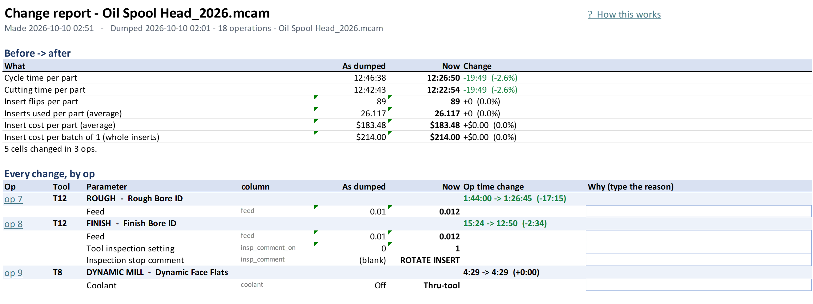
Worked example
Oil Spool Head, bore feeds raised to 0.012, batch of 20 parts (typed on the Summary):
| Before | After | Saved | |
|---|---|---|---|
| Cycle time per part | 12:46:38 | 12:26:50 | 0:19:49 |
| Cycle time per batch (20) | about 255:33 | about 248:57 | about 6:36 |
| Insert flips per part | 89 | 89 | 0 |
| Op | Parameter | As dumped | Now | Op time change | Why (type the reason) |
|---|---|---|---|---|---|
| op 7 – T12 ROUGH – Rough Bore ID | Feed | 0.01 | 0.012 | 1:44:00 → 1:26:45 (-17:15) | Insert box says 0.008-0.016 |
| op 8 – T12 FINISH – Finish Bore ID | Feed | 0.01 | 0.012 | 15:24 → 12:50 (-2:34) | Same tool; finish checked on first part |
What the messages mean
The cycle time estimate
What this is for
Each op row has cycle_time (Mastercam's own time, as dumped) and est_cycle_time (the
live estimate). They start the same. When you change the feed, speed, CSS/RPM, max RPM or per rev /
per min on a row, the estimate moves at once – and so do the Summary's totals. This page says how it works and
where it can be wrong.
When to use it
Whenever you judge a change by its time – and before you trust a big saving.
Steps
How the estimate is worked out:
- At the dump, the tool walks each op's toolpath, move by move: how long each cutting move is, and at what diameter.
- For each move it works out the time: per minute: length ÷ feed. Per rev: length ÷ (feed × RPM). With CSS, the RPM at that diameter is SFM × 3.82 ÷ diameter – but never more than the op's max RPM.
- These sums are written into the sheet as formulas tied to the row's own cells. Change a cell and the formula follows.
- Everything else – rapids, tool changes, dwells – is kept as it was. It does not change with feed or speed.
What it cannot know until you regenerate: a new depth of cut, stepover, stock to leave or number of passes changes the toolpath itself. The estimate does not move for those. Load, regenerate, and dump again to see their time.
On real parts, the estimate matches Mastercam's own cycle time to within seconds per op.
Worked example
Op 7, Rough Bore ID: 1:44:00 in all, of which 1:43:28 is cutting. The feed goes from 0.010 to 0.012 per rev.
| Before | After | |
|---|---|---|
feed | 0.010 | 0.012 |
| Cutting time | 1:43:28 | 1:26:13 (× 0.010 ÷ 0.012) |
| Everything else | 0:00:32 | 0:00:32 |
est_cycle_time | 1:44:00 | 1:26:45 |
time_change | +0:00:00 | -0:17:15 |
Where max RPM bites. Facing with CSS at 200 SFM and a max of 3500 RPM: at 1″ diameter the spindle turns 764 RPM; near the center, at 0.2″, it would need 3820 RPM but stops at 3500. Raising the SFM speeds up the outside of the face, not the middle. The estimate knows this, move by move.
What the messages mean
How insert flips are counted
What this is for
An insert flip is a fresh cutting edge: the operator rotates, flips or changes the insert. Flips per part tell you how many inserts a part uses – and what they cost. This page explains where the numbers in the flip columns come from, so you can trust them (or know when not to).
When to use it
When the flips on the sheet look too high or too low, or before you change insp_time or an inspection comment.
Steps
The tool counts flips in three steps, for every op:
- Stops with a comment. Mastercam's Tool inspection settings stop the machine
(every so much cutting time, distance, or number of cuts). Each stop has a comment. If the comment says
ROTATE,FLIP,CHANGEorINDEX, the stop is a flip. Other stops (CHECK INSERT) are just a look. These are read from the toolpath as it is – columnflips– and follow your edits live inflips_est. - Stops with no comment (the op's inspection comment switch,
insp_comment_on, is off). They leave nothing in the toolpath, so the tool works them out with an edge clock: it adds up the tool's cutting time, and every time the edge has cut itsedge_limit, that is one flip.edge_limitis the op'sinsp_time, or, if the op has none, the tool's Edge life on the Tools page (8:00 to start). The clock carries over from one op of the tool to the next. Columnflips_uncommented. - Add them up.
flips_part=flips_est+flips_uncommented, in whole flips. The Tools page adds each tool's ops (counting the copies a transform makes); the inserts table divides by the edges per insert.
Worked example
Tool T5 runs two ops: A cuts 5:00, B cuts 7:00. Its ops stop for inspection with no comment; the tool's edge life is 8:00.
| op A | op B | Tool T5 | |
|---|---|---|---|
| Cutting time | 5:00 | 7:00 | 12:00 |
edge_after (edge clock leaving the op) | 5:00 | 4:00 | |
flips_uncommented | 0 | 1 | 1 flip per part |
Now say op B's feed goes up 40%. Its cutting time drops to 5:00, the clock reaches only 10:00 – and still one flip. Up 70%: 4:07, the clock ends at 9:07, still one flip. The flips only drop when the whole tool cuts less than one edge life.
If the stops had a comment like ROTATE INSERT, Mastercam's own timer would decide: it
starts again in op B, neither op reaches 8:00, so there would be 0 flips. That is why
the comment you pick matters.
What the messages mean
Word list
What this is for
Plain meanings for the words in this manual and on the sheet. The first part is general words. The second part is every column, by the name it has on the sheet (row 2 of Lathe params).
When to use it
When a word or a column name is new to you. On the sheet itself, hover over a column name for the same help.
Steps
- Press Ctrl+F in your browser and type the word or the column name, e.g.
max_ss. - Or click a letter below to jump to it.
- Follow the See also links for the bigger picture.
Worked example
Row 2 of the sheet says feed_mode and the cell says per rev. Look up feed_mode in
the columns below: per rev (IPR / mm per rev) or per min (IPM / mm per min) for feed
. Then
per rev / per min above it tells you what that means at the machine.
| On the sheet | In plain words |
|---|---|
feed 0.012, feed_mode per rev | The tool moves 0.012″ for every turn of the spindle (G95 F.012). |
speed 200, speed_mode CSS | 200 feet per minute at the cutting edge; the RPM changes with the diameter (G96 S200). |
max_ss 3500 | The spindle never goes above 3500 RPM, however small the diameter (G50 S3500). |
General words
- Add-in
- A program that plugs into Mastercam and adds commands to it. This tool is one.
- Air cutting (
air_pct) - Time the tool spends feeding but touching nothing – usually a pass that starts too far out, or stock that is not there any more. Cutting air costs time and nothing else.
- Batch
- How many parts you run in one go. Type it on the Summary to get time and insert cost per batch.
- Blue cell
- A worked-out number (time, flips, MRR) that moved because of your edits. You did not type it.
- Cell, row, column
- A cell is one box of the spreadsheet. A row goes across (one op); a column goes down (one setting). Columns have letters at the top (A, B, C); rows have numbers on the left.
- Chip thinning, chip thickness
- With a round insert, or an insert with a lead angle, the chip is thinner than the feed: real chip = feed × sin(entering angle). A chip that is too thin rubs instead of cutting and wears the insert. To get the chip you want, program a higher feed. See Speed & feed.
- Column group
- A set of columns under one name in row 1 (Feeds and speeds, Coolant ...). Groups fold away with the small + / - above the columns. See The main sheet.
- Coolant: Off, Flood, Mist, Thru-tool
- Flood: a stream over the cut. Mist: a fine spray. Thru-tool: through the tool or the holder, at the edge. Machines are set up one of two ways: one coolant setting per op (
coolant, also called V9 style), or coolants turned on before, with or after the move, by the machine's own names (coolant_before,coolant_with,coolant_after, also called X style). See Coolant. - CSS (constant surface speed)
- The spindle speeds up as the tool moves toward the center, so the edge always sees the same surface speed. G96 on most controls. The opposite is fixed RPM (G97). Always set a max RPM with CSS.
- Ctrl+Z
- Undo. Hold Ctrl and press Z. See Undo.
- Cutting time (
cut_seconds_est) - The part of the cycle time spent feeding (cutting or air cutting). Rapids and tool changes are not in it.
- Cycle time
- How long the op (or the whole part) takes.
cycle_timeis Mastercam's own figure, as dumped. - Depth of cut (
step, DOC) - How deep each roughing pass cuts. On a lathe, usually per side (radius). A finish op's
stepis the stepover between finish passes. - Dropdown
- A cell with a small arrow on its right when you click it. Click the arrow and pick from the list.
- Dump
- Writing the part's ops out to an Excel workbook. See Dump to Excel.
- Dynamic (dynamic rough, dynamic mill)
- Toolpaths that keep the tool's engagement even, with a small stepover and a high feed. Their feed and stepover go together – see chip thinning.
- Edge
- One cutting corner of an insert. A CNMG has 4 usable edges (2 on each side); a VCMT has 2; a round insert has many.
- Edge life
- How much cutting time one edge lasts before it should be turned. The Tools page's Edge life (fallback) is used for ops that stop for inspection but set no
insp_timeof their own. Typed as minutes:seconds (8:00). - Entering angle, lead angle
- The angle between the cutting edge and the direction of feed. A 90° entering angle (0° lead) makes a chip as thick as the feed. A 45° entering angle makes it about 0.7 of the feed. Makers give one or the other – entering angle = 90° − lead angle.
- Estimate (
est_cycle_time) - The live cycle time: it starts equal to Mastercam's and moves with your feed and speed edits. See The cycle time estimate.
- Feed
- How fast the tool moves while cutting: per rev or per minute. On the sheet, the number is
feed(always positive) and the unit isfeed_mode. - Flip (insert flip)
- Turning, flipping or changing the insert to a fresh edge. The tool counts a tool inspection stop as a flip when its comment says ROTATE, FLIP, CHANGE or INDEX – and works out stops with no comment from the edge life. See How insert flips are counted.
- Grey cell
- A cell you cannot type in: read-only, or a setting that is not part of that kind of op.
- Insert
- The replaceable carbide (or other) cutting tip clamped in the holder. The Tools page names each one by shape and nose radius, like
C 80° r0.031(an 80° diamond, 0.031″ nose radius). - Insert size (IC)
- The size of an insert's inscribed circle – for a round insert, its diameter. Chip thinning on round inserts needs it.
- Inspection comment (
insp_comment) - The message that comes out at a tool inspection stop, for the operator:
ROTATE INSERT,CHECK INSERT... Its words decide whether the stop counts as a flip. - Tool inspection,
insp_time - Mastercam can stop the machine during an op so the operator can look at or turn the insert: every so much cutting time (
insp_time, minutes:seconds), distance, or number of cuts, and at the end. These settings are the Tool inspection column group. - Load
- Putting the edited values from the workbook back into the part. See Load the changes.
- Macro
- A small program inside the workbook. With macros (an
.xlsmfile) you get the Parameter Table tab on Excel's ribbon. Without them (.xlsx) the workbook still works and still loads. - Manual entry
- An op that puts your own text into the NC program, as a comment or as code. Its text is
manual_text. - Max RPM (
max_ss) - The highest spindle speed the op may use. With CSS, the RPM climbs as the diameter shrinks; max RPM stops it there (G50 S on many lathes). Too high near the center is a safety risk; too low slows small diameters.
- Median
- The middle value: put the values in order and take the one in the middle (with an even count, halfway between the two middle ones). Unlike the average, one odd part does not pull it far. The shop workbook gives the median speed, feed, depth and edge time of each insert.
- Mixed
- In a window that works on several ops: the ops do not all have the same value. Whatever you apply replaces them all.
- MRR, material removed
- Metal removal rate: how much material is cut per minute (in³/min or cm³/min).
mrris the theory while cutting (12 × SFM × feed per rev × depth for turning).mrr_avgis the real one over the whole op, including air and rapids.removedis the total the op takes off – fixed by the toolpath. - NCI
- Mastercam's own record of a toolpath's moves, before the post turns it into G-code. The tool reads it for times, lengths and stops.
- Op (operation)
- One toolpath in Mastercam's Operation Manager: a rough, a finish, a groove, a drill ... Each op is one row of the sheet.
- Op number (
op_idn) - The op's ID number in Mastercam. It is how the load finds the right op – never change it.
- Operation Manager
- The list of ops in Mastercam (the Toolpaths tab). The sheet keeps its order.
- Per rev / per min (IPR, IPM)
- Per rev: how far the tool moves for each turn of the spindle (inches per rev, IPR, or mm per rev; G95 / G99). Per min: how far it moves in a minute (IPM or mm/min; G94 / G98). Per min = per rev × RPM. Lathes mostly use per rev; live tools use per min.
- Percent: +10%, -10%
+10%means 10% more than now: 0.010 becomes 0.011.-10%means 10% less: 0.010 becomes 0.009. Always type the sign – a bare10%is refused, because it does not say which way. In Hit a target time,-10%means 10% less time.- Post
- The post processor: it turns Mastercam's toolpaths into G-code for your machine.
- PrimeTurning
- Sandvik's turning method that cuts in both directions with a small entering angle and high feeds, using A-type and B-type inserts. Its ops keep their own feeds and speeds (
pt_rough_speed,pt_rough_feed_axial...) – the plainfeedandspeedcolumns do not drive them. - .ptconfig file
- A small file next to the part (
<part>.ptconfig) that keeps what you typed on the Tools page and the Summary: insert names, edges, cost, parts per edge, edge life, batch quantity. The next dump starts from it. Delete it to start over. - Radius and diameter
- The X travel columns (
travel_x_min,travel_x_max) are a radius – double them for the diameter. The tool works speeds at the diameter. - Regenerate
- Making Mastercam work out an op's toolpath again after its settings changed. After a load, the changed ops are marked dirty (needing regeneration). Until you regenerate, the NC code and the times are the old ones.
- Ribbon
- The band of buttons across the top of Excel (or Mastercam), in tabs. The tool adds a Parameter Table tab to Excel's.
- RPM
- Revolutions per minute: how fast the spindle turns. With CSS the RPM changes with the diameter; with fixed RPM (G97) it does not.
- Scenario
- A set of edits saved under a name inside the workbook, to restore or compare later. See Scenarios.
- SFM (surface speed, m/min)
- Surface feet per minute: how fast the material passes the cutting edge. RPM = SFM × 3.82 ÷ diameter in inches. Metric: m/min, and RPM = m/min × 318.3 ÷ diameter in mm. Insert boxes give a range of SFM for each material.
- Shop workbook
- The one workbook Dump a folder of parts writes after it dumps every part:
Shop_compare_and the date. It puts the parts side by side - per part, per insert and per op - so you can see how your shop runs each insert. - Status bar
- The thin bar along the very bottom of the Excel window. The tool writes short messages there (“3 cell(s) set ...”).
- Stepover
- How far the tool moves over between passes, side to side. For dynamic toolpaths, often given as a percent of the tool (
stepover_percent). - Stock to leave
- Material a rough leaves on for the finish pass, in X (
stock_x, usually per side) and Z (stock_z). - Tool number (T12)
- The turret or pocket number of the tool. In Find op, type
T12to find tool 12's ops. - Toolpath
- The moves an op makes. Mastercam works it out from the op's settings (see regenerate).
- Tooltip
- The little note that appears when you hover the mouse over something, or click a cell. Every column name and cell on the sheet has one.
- Transform
- An op that copies other ops' toolpaths (mirror, rotate, translate). The sheet shows transforms read-only; their copies count in the part's time and flips.
- Usual edge time
- What one edge of an insert normally lasts in your shop. You type it in the last column of the Tools page's inserts table; the Program check warns about a tool whose edge runs more than 25% longer.
- Workbook, sheet
- A workbook is one Excel file. A sheet is one page of it, chosen by the tabs along the bottom (Summary, Lathe params, Tools).
- Yellow cell
- A cell you changed: it differs from the dump. It goes white again if you put the dumped value back.
Columns on the sheet
This part is made from the sheet's own tooltips (the text you see when you hover a column name), so it always matches your sheet. A column not listed here (most of the Tool inspection and Filter settings, the planes, home and reference points) has its own tooltip on the sheet: hover its name.
Identity and context
- changes
- How many cells in this row differ from the dump. Edited cells are highlighted.
- comment
- The operation's comment, as the Operation Manager shows it. Edit it here and it loads back (up to 119 characters).
- group_name
- The toolpath group the operation is in.
- needs_regen
- yes = the toolpath is out of date; regenerate before posting. Stats are stale until then. See also: regenerate.
- op_idn
- The operation's ID - how a load finds its row's operation. Do not change.
- tool
- Tool number.
- tool_name
- The tool's description.
- tool_radius
- The tool radius the percent columns are a percent of (dynamic rough).
- type
- The kind of operation - ROUGH, FINISH, FACE, GROOVE, DRILL, MANUAL, DYNAMIC MILL and so on.
- units
- in or mm - the units every length on this row is in.
Toolpath stats
- back_feed
- Dynamic mill back feed - the feed of the repositioning moves (per minute).
- cut_length
- Total length of the feed moves (lines and arcs) in the toolpath.
- cycle_time
- Mastercam's estimated cycle time for this operation, h:mm:ss (matches the Operation Manager to within seconds).
- cycle_time_raw
- The cycle time in seconds, as Mastercam returned it.
- dcut_fin_n
- Mill depth cuts: number of finish cuts.
- dcut_finish
- Mill depth cuts: finish step.
- dcut_rough
- Mill depth cuts: max rough step.
- est_cycle_time
- LIVE estimate: Mastercam's cycle time, moved by your feed / speed / CSS / max_ss edits on this row. Equals cycle_time until you edit. See also: estimate.
- est_seconds
- The live estimate in seconds (the formula behind est_cycle_time).
- feed_groups
- Feed-move length at each feed rate, longest first - a dynamic mill's back feed is its own entry.
- fr_override
- Contour feed rate override, used when fr_override_on is 1.
- mcut_fin_n
- Mill multi passes: number of finish passes.
- mcut_rough_n
- Mill multi passes: number of rough passes.
- rapid_length
- Total length of the rapid moves WITHIN the operation - backplot also counts the moves to and from it, so its figure is larger.
- ss_override
- Contour spindle speed override, used when ss_override_on is 1.
- time_change
- How much the live estimate differs from Mastercam's cycle time.
- travel_x_max
- Largest X the toolpath reaches - a RADIUS (double it for diameter).
- travel_x_min
- Smallest X the toolpath reaches - a RADIUS (double it for diameter).
- travel_z_max
- Largest Z the toolpath reaches, in the tool plane.
- travel_z_min
- Smallest Z the toolpath reaches, in the tool plane.
Feeds and speeds
- feed
- Cutting feed rate - always positive here. Per rev or per minute is set in feed_mode. See also: per rev.
- feed_mode
- per rev (IPR / mm per rev) or per min (IPM / mm per min) for feed. See also: per rev.
- max_ss
- Maximum spindle speed (RPM) - the cap when running CSS. See also: max rpm.
- plunge
- Plunge feed rate - per rev or per minute is set in plunge_mode.
- plunge_mode
- per rev or per min for plunge. See also: per rev.
- plunge_surf_fin
- 1 = plunge holds a surface finish value instead of a feed rate.
- retract
- Retract feed rate - per rev or per minute is set in retract_mode.
- retract_mode
- per rev or per min for retract. See also: per rev.
- speed
- Spindle speed - surface speed when speed_mode is CSS, RPM when it is RPM. See also: sfm.
- speed_mode
- CSS = constant surface speed (speed is SFM or m/min); RPM = fixed spindle speed. See also: css.
- spindle_dir
- CW (M03) or CCW (M04).
- surf_fin_feed
- 1 = feed holds a surface finish value instead of a feed rate.
Depth of cut
- min_step
- Smallest depth of cut the rough will take.
- n_cuts
- Number of finish passes.
- peck1
- Drill: first peck depth.
- peck2
- Drill: subsequent peck depth.
- step
- Rough: depth of cut per pass. Finish: stepover between finish passes. See also: depth of cut.
- stepover
- Dynamic rough stepover. Change this and stepover_percent follows. See also: stepover.
- stepover_percent
- Stepover as a percent of tool radius - calculated from stepover. Typing here replaces the formula.
Stock to leave
- fin_stock_x
- Semi-finish passes: stock to leave in X.
- fin_stock_z
- Semi-finish passes: stock to leave in Z.
- stock_x
- Stock to leave in X. See also: stock to leave.
- stock_z
- Stock to leave in Z. See also: stock to leave.
Coolant
- canned_text_raw
- The operation's canned text and coolant codes, raw.
- coolant
- V9 coolant - the one coolant setting on a machine set up for V9 coolant: Off, Flood, Mist or Thru-tool. See also: coolant.
- coolant_after
- Coolant turned on AFTER the move - pick from this machine's coolants, or none.
- coolant_before
- Coolant turned on BEFORE the move - pick from this machine's coolants, or none. See also: coolant.
- coolant_text
- The V9 coolant field in words.
- coolant_with
- Coolant turned on WITH the move - pick from this machine's coolants, or none.
Prime turning's own feeds and speeds
- finish_feed
- Finish-pass feed rate, used when use_finish_feed is 1.
- finish_ss
- Finish-pass spindle speed, used when use_finish_ss is 1.
- finish_step
- Finish pass cut amount.
- pt_fin_feed_axial
- Prime turning FINISH feed along Z; unit in pt_fin_axial_type.
- pt_fin_feed_radial
- Prime turning FINISH feed along X; unit in pt_fin_radial_type.
- pt_fin_speed
- Prime turning FINISH spindle speed - CSS when pt_fin_css is 1, else RPM.
- pt_rough_css
- 1 = prime turning rough speed is CSS.
- pt_rough_feed_axial
- Prime turning ROUGH feed along Z; unit in pt_rough_axial_type.
- pt_rough_feed_from
- user defined = the feeds as typed; chip thickness = Mastercam works them out from pt_rough_chip.
- pt_rough_feed_radial
- Prime turning ROUGH feed along X; unit in pt_rough_radial_type.
- pt_rough_speed
- Prime turning ROUGH spindle speed - CSS (SFM / m/min) when pt_rough_css is 1, else RPM. See also: primeturning.
- pt_strategy
- Prime turning roughing strategy.
- rough_step
- Face: rough stepover. Groove / plunge rough: step across the groove.
- rough_step_by
- Groove rough step from: 0 number of steps, 1 step amount, 2 percent of tool width.
Toolpath-specific
- cycle
- Drill cycle number.
- direction
- Cut direction: 0 OD, 1 ID, 2 face, 3 back. Shown, never written.
- do_finish
- 1 = take semi-finish passes.
- entry_amt
- Rough: entry amount.
- exit_amt
- Rough: exit amount.
- fin_n_cuts
- Number of semi-finish passes.
- fin_step
- Semi-finish stepover.
- linear_tol
- Tolerance for turning spline geometry into lines. Only matters on spline chains.
- manual_gcode
- Manual entry output: 1005 = as a comment, 1006 = as code.
- manual_save
- How the manual entry is saved. Shown, never written.
- manual_source
- Where the manual entry text comes from. Shown, never written.
- manual_text
- The manual entry's text (up to 3111 characters). Alt+Enter for a new line; with macros, double-click for a bigger editor.
- nonCuttingRegionAngle
- Dynamic rough non-cutting region angle, degrees.
- overlap
- Rough: overlap amount between passes.
- radius
- Dynamic rough toolpath radius. Change this and radius_percent follows.
- radius_percent
- Toolpath radius as a percent of tool radius - calculated from radius. Typing here replaces the formula.
- rough_angle
- Rough: cut angle, in RADIANS.
- zigzag
- 0 = one way, 1 = zigzag.
Home, planes, filter
- clearance_pln
- Clearance plane value.
- feed_pln
- Feed plane value.
- filter_on
- 1 = arc filter / tolerance on: runs of short moves become arcs and longer lines.
- filter_reduce_type
- 0 = neither, 1 = reduce line tolerance, 2 = reduce arc tolerance.
- filter_tol
- Arc filter tolerance.
- home_mode
- Home position: 0 from machine, 1 user defined, 2 from tool.
- retract_pln
- Retract plane value.
Where it sits
- group_id
- Toolpath group ID. Shown, never written.
- tplane_id
- Tool plane ID. Shown, never written.
- wcs_id
- Work coordinate system ID. Shown, never written.
Tool inspection and insert flips
- air_pct
- Share of the op's feed time cutting nothing (stock simulation). See also: air cutting.
- cut_dia
- Mean cutting diameter over the feed moves (from the NCI) - where an RPM op's surface speed, and CSS's max_ss cap, are taken. A drill: the tool diameter. See also: sfm.
- cut_seconds_est
- Feed time in seconds, LIVE - the cutting part of the estimate; the Tools page sums it per tool.
- edge_after
- Cut time (seconds) the tool's edge has done since its last flip, leaving this op - the next op of the same tool carries on from it.
- edge_limit
- Cut time (seconds) an edge takes before a comment-less stop counts as a flip: the op's insp_time when filled in, else the tool's edge life on the Tools page (8:00). See also: edge life.
- flip_longest
- The most feed time between flips (or from the start / to the end) - the longest any edge cuts.
- flips
- Insert flips in the toolpath as it is: inspection stops whose comment changes the insert (CHANGE/ROTATE INSERT). See also: flip.
- flips_est
- Insert flips per part, LIVE: follows feeds, speeds and the inspection settings. Equal to flips until something changes. See also: flip.
- flips_part
- All the flips of the op per part, LIVE: commented (flips_est) + inferred (flips_uncommented). The Tools page sums it per tool. See also: flip.
- flips_uncommented
- Flips from stops with NO comment, LIVE - inferred from the settings (they leave nothing in the NCI): one each time the edge has cut edge_limit, carrying short ops' time over to the tool's next op.
- flips_why
- Why each flip happened: time, distance, cuts (number of cuts, first cut, each depth) or end of the operation.
- insp_at_end
- Tool inspection stop at the end of the operation.
- insp_between_cuts
- 1 = stop only between cuts (the real interval runs over the setting); 0 = stop mid-cut.
- insp_dist
- Tool inspection: cut length between stops.
- insp_min_cut
- Mid-cut stops: a pass with less than this left is finished first.
- insp_mode
- How stops are placed: between cuts only, or mid-cut (finishing a pass that is nearly done).
- insp_time
- Tool inspection: feed time between stops, as minutes:seconds (9:00) - or seconds (540). See also: insp time.
- mrr
- Metal removal rate while cutting, LIVE, in3/min (cm3/min metric). Turning: 12 x SFM x feed/rev x depth; drill: pi D^2/4 x feed/min; mill: ae x ap x feed/min (see mrr_basis). Follows speed, feed and depth edits. See also: mrr.
- mrr_avg
- Actual MRR over the whole operation, LIVE: removed / op time - rapids, leads and air cuts included. Follows feed and speed edits through the estimate. See also: mrr.
- mrr_basis
- What mrr is worked from: the depth-of-cut column, the diameter, and whether max_ss caps the speed. A mill op: its ae (contour: full tool width unless multi passes - an upper bound; dynamic: stepover) and ap.
- mrr_engaged
- Actual MRR while in metal, LIVE: removed / (cut time less its air share). Set it beside mrr (theoretical) - a big gap says the depth or engagement is not what the parameters suggest. See also: mrr.
- removed
- Material the op removes (in3, cm3 metric) - fixed by its toolpath, so feed and speed edits do not change it (a depth edit does only once the op is regenerated). From a 2D stock simulation where it covers the op, else mrr x cut time - see removed_from. See also: mrr.
- removed_check
- The stock simulation set against Mastercam's own stock boundaries: 'agrees', or both figures when they differ by more than 20% - usually a tool whose outline in Mastercam is not its real insert.
- removed_from
- Where removed comes from: the stock simulation (the toolpath swept through the stock), or an estimate (mrr x cut time, which counts air as cutting). Drill cycles, mill moves and ops after a stock flip are not simulated.
- xf_copies
- A transform: how many copies of its source operations its toolpath holds (measured). A source: how many more times transforms cut it - the Tools page counts its tool time and flips that many more times.
- xf_detail
- The transform in words: its kind and numbers (steps, angle or distance, about where).
- xf_instances
- Copies the transform makes, as its dialog counts them: rotate - its steps; rectangular array - X steps x Y steps; mirror - 1.
- xf_make_ops
- 1 = the transform makes new operations (and geometry); 0 = it transforms the toolpath only.
- xf_source_geom
- 1 = transforms the source operations' geometry; 0 = their NCI.
- xf_sources
- The op_idn of each operation the transform copies, as Mastercam lists them.
- xf_type
- Transform kind: mirror, rotate or translate. Transforms are shown, never written.
Tools page columns
- Insert
- The insert the tool carries, worked out from its shape. Type over it if it is wrong; tools with the same name count as one insert.
- Flips / part
- The tool's insert flips per part, from all its ops (live).
- Cut time / part
- The tool's cutting time per part (live).
- Longest between flips
- The most cutting time any edge of this tool does between flips.
- Inspection
- What the tool's ops stop on, in words (“every 8:00 of cutting, at end”).
- Edge life (fallback)
- Cut time one edge lasts, for ops that stop for inspection but set no
insp_time. See edge life. - Edges per insert
- How many cutting edges one insert has (inserts table).
- Inserts / part
- Flips per part ÷ edges per insert, in whole inserts (a fraction for an insert that outlasts a part).
- Cost per insert, Insert cost / part
- Type what one insert costs; the cost per part follows.
- Parts per edge
- For an insert that lasts more than one part: how many parts one edge makes.
- Usual edge time
- How long one edge of this insert usually cuts before it is turned (inserts table). See usual edge time.
- Insert size (IC)
- The insert's size across its inscribed circle – a round insert's diameter – in the part's units. Chip thinning uses it.
- Entering angle
- Degrees from the cutting edge to the feed, from the holder's ISO code (PCLNR: 95). 90 = square shoulder, no chip thinning. US lead angle = 90 minus this. See entering angle.
Troubleshooting
What this is for
Something did not work, or a message came up. Find it below. Each topic page also has its own “What the messages mean”.
When to use it
When the tool does not do what you expect – before you give up on a change.
Steps
- Read the message word for word. Type a few of its words into the search box at the top of this page.
- Look for it in the list below.
- Nothing went into the part yet? Then nothing is lost: Excel edits stay in the workbook until you load.
- Something went into the part and it is wrong? Run Lathe params - undo last load.
Worked example
Problem: the workbook opened, but there is no Parameter Table tab on Excel's ribbon.
| Check | What you see | Fix |
|---|---|---|
| The file name ends in | .xlsx | It was dumped without macros. Dump again with
Include macros ticked (you get an .xlsm). |
| A yellow bar under the ribbon | Macros have been disabled | Click Enable Content. |
| A red bar | Microsoft has blocked macros ... | The file came from email or the internet. Close it, right-click the file, Properties, tick Unblock, OK, open it again. |
| A yellow bar | Protected View | Click Enable Editing. |